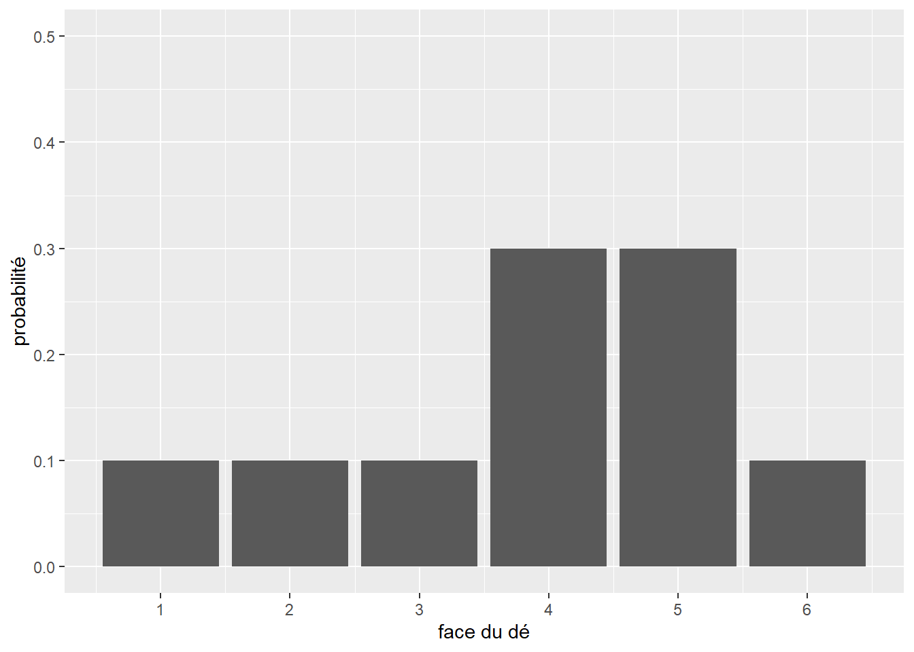
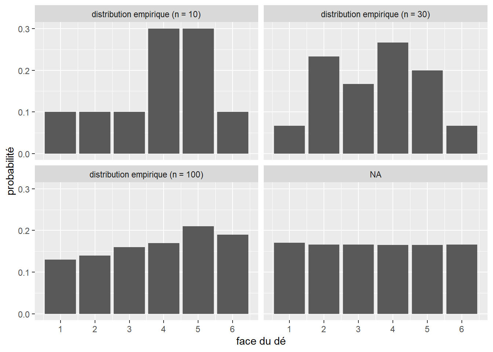
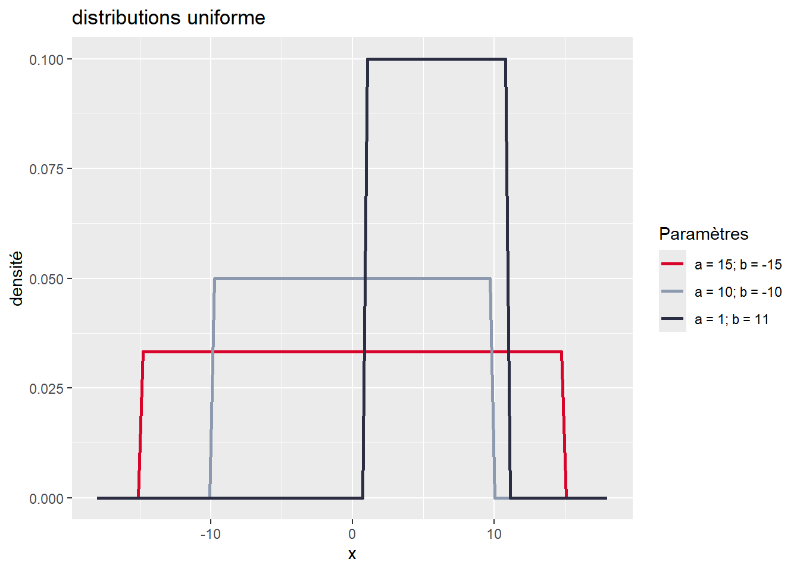
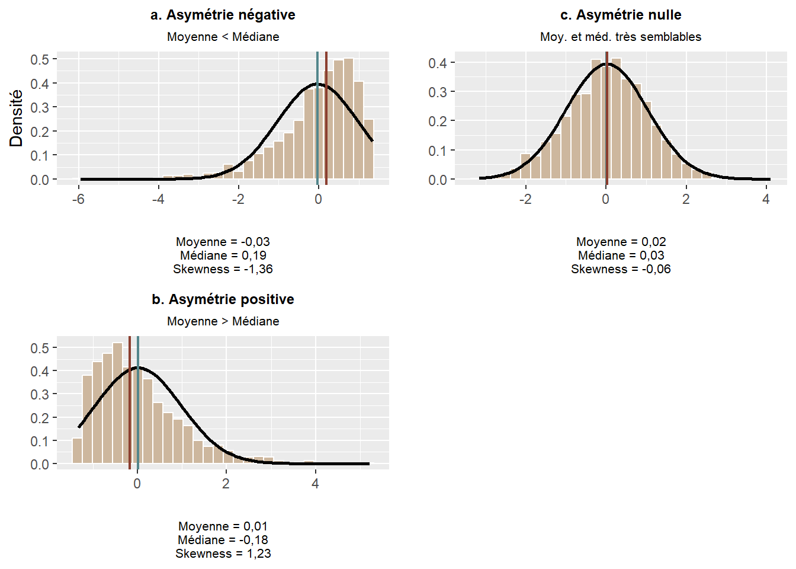
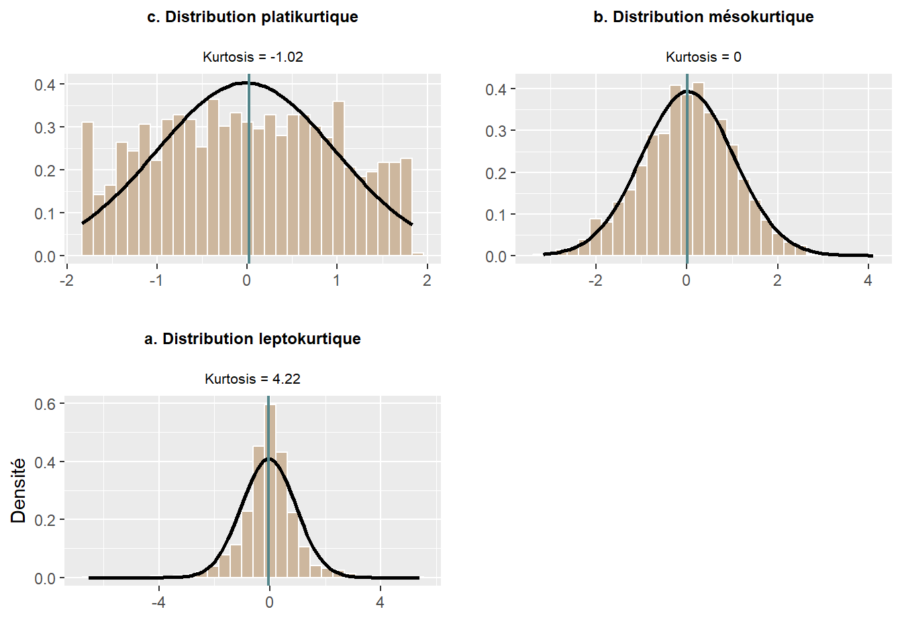
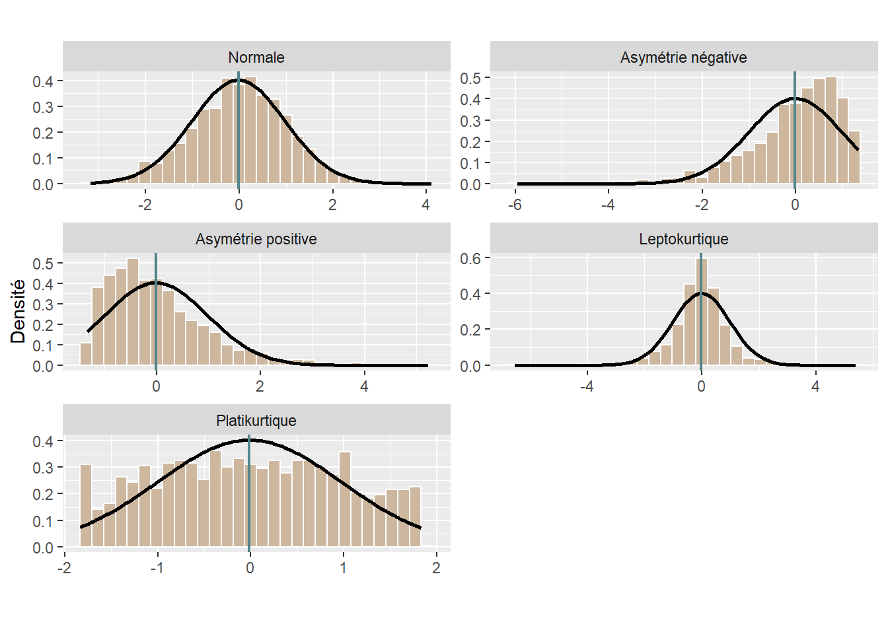
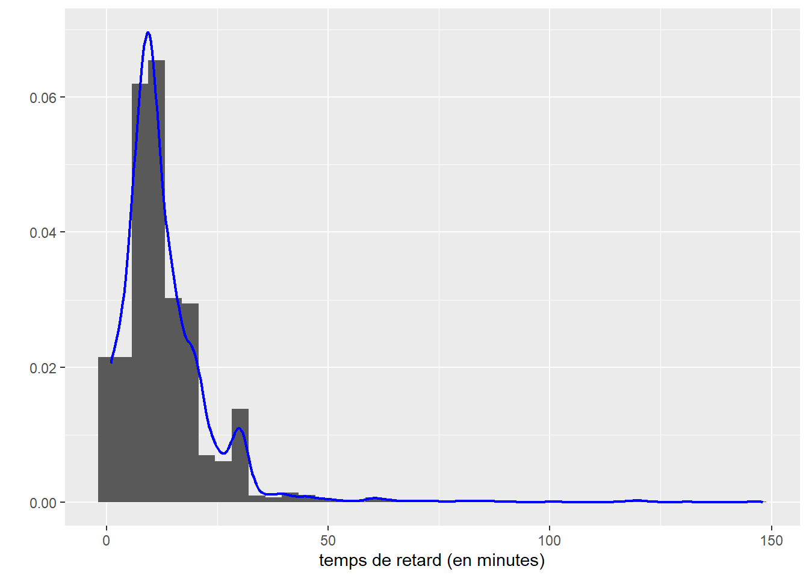
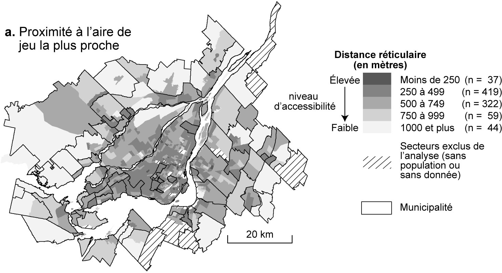

2 Statistiques descriptives univariées
Comprendre la notion de variable et de ses différents types est essentiel en statistiques. En effet, en fonction du type de variable à l’étude, les méthodes de statistique exploratoire ou inférentielle sont différentes. Nous distinguons ainsi cinq types de variables : nominale, ordinale, discrète, continue et semi-quantitative. Aussi, nous abordons un concept central de la statistique : les distributions. Finalement, dans ce chapitre, nous présentons les différentes statistiques descriptives univariées qui peuvent s’appliquer à ces types de variables.
Liste des packages utilisés dans ce chapitre
- Pour créer des graphiques :
-
ggplot2, le seul, l’unique! -
ggpubrpour combiner des graphiques et réaliser des diagrammes quantiles-quantiles.
-
- Pour créer des distributions :
-
fitdistrpluspour générer différentes distributions. -
actuarpour la fonction de densité de Pareto. -
gamlss.distpour des distributions de Poisson.
-
- Pour les statistiques descriptives :
-
statsetmomentspour les statistiques descriptives. -
nortestpour le test de Kolmogorov-Smirnov. -
DescToolspour les tests de Lilliefors, Shapiro-Wilk, Anderson-Darling et Jarque-Bera.
-
- Autres packages :
-
HmiscetWeighted.Desc.Statpour les statistiques descriptives pondérées. -
foreignpour importer des fichiers externes.
-
2.1 Notion et types de variable
2.1.1 Notion de variable
D’un point de vue empirique, une variable est une propriété, une caractéristique d’une unité statistique, d’une observation. Il convient alors de bien saisir à quelle unité d’analyse (ou unité d’observation) s’appliquent les valeurs d’une variable : des personnes, des ménages, des municipalités, des entreprises, etc. Par exemple, pour des individus, l’âge, le genre ou encore le revenu sont autant de caractéristiques qui peuvent être mesurées à partir de variables. Autrement dit, une variable permet de mesurer un phénomène (dans un intervalle de valeurs, c’est-à-dire de manière quantitative) ou de le qualifier (avec plusieurs catégories, c’est-à-dire de manière qualitative).
D’un point de vue plus théorique, une variable permet d’opérationnaliser un concept en sciences sociales (Gilles et Maranda 1994, 30), soit une « idée générale et abstraite que se fait l’esprit humain d’un objet de pensée concret ou abstrait, et qui lui permet de rattacher à ce même objet les diverses perceptions qu’il en a, et d’en organiser les connaissances » (Larousse). En effet, la construction d’un modèle théorique suppose d’opérationnaliser différents concepts et d’établir les relations qu’ils partagent entre eux. Or, l’opérationnalisation d’un concept nécessite soit de mesurer (dans un intervalle de valeurs, c’est-à-dire de manière quantitative), soit de qualifier (avec plusieurs catégories, c’est-à-dire de manière qualitative) un phénomène.
Maîtriser la définition des variables que vous utilisez : un enjeu crucial!
Ne pas maîtriser la définition d’une variable revient à ne pas bien saisir la caractéristique ou encore le concept sous-jacent qu’elle tente de mesurer. Si vous exploitez des données secondaires – par exemple, issues d’un recensement de population ou d’une enquête longitudinale ou transversale –, il faut impérativement lire les définitions des variables que vous souhaitez utiliser. Ne pas le faire risque d’aboutir à :
Une mauvaise opérationnalisation de votre modèle théorique, même si votre analyse est bien menée statistiquement parlant. Autrement dit, vous risquez de ne pas sélectionner les bonnes variables : prenons un exemple concret. Vous avez construit un modèle théorique dans lequel vous souhaitez inclure un concept sur la langue des personnes. Dans le recensement canadien de 2016, plusieurs variables relatives à la langue sont disponibles : [connaissance des langues officielles, langue parlée à la maison, langue maternelle, première langue officielle parlée, connaissance des langues non officielles et langue de travail] (https://www12.statcan.gc.ca/census-recensement/2016/ref/guides/003/98-500-x2016003-fra.cfm). La sélection de l’une de ces variables doit être faite de manière rigoureuse, c’est-à-dire en lien avec votre cadre théorique et suite à une bonne compréhension des définitions des variables. Dans une étude sur le marché du travail, nous sélectionnerions probablement la variable sur la connaissance des langues officielles du Canada, afin d’évaluer son effet sur l’employabilité, toutes choses étant égales par ailleurs. Dans une autre étude portant sur la réussite ou la performance scolaire, il est probable que nous utiliserions la langue maternelle.
Une mauvaise interprétation et discussion de vos résultats en lien avec votre cadre théorique.
Une mauvaise identification des pistes de recherche.
Finalement, la définition d’une variable peut évoluer à travers plusieurs recensements de population : la société évolue, les variables aussi! Par conséquent, si vous comptez utiliser plusieurs années de recensement dans une même étude, assurez-vous que les définitions des variables sont similaires d’un jeu de données à l’autre et qu’elles mesurent ainsi la même chose.
Comprendre les variables utilisées dans un article scientifique : un exercice indispensable dans l’élaboration d’une revue de littérature
Une lecture rigoureuse d’un article scientifique suppose, entre autres, de bien comprendre les concepts et les variables mobilisés. Il convient alors de lire attentivement la section méthodologique (pas uniquement la section des résultats ou pire, celle du résumé), sans quoi vous risquez d’aboutir à une revue de littérature approximative. Ayez aussi un regard critique sur les variables utilisées en lien avec le cadre théorique. Certains concepts sont très difficiles à traduire en variables; leurs opérationnalisations (mesures) peuvent ainsi faire l’objet de vifs débats au sein de la communauté scientifique. Très succinctement, c’est notamment le cas du concept de capital social. D’une part, les définitions et ancrages sont bien différents selon Bourdieu (sociologue, ancrage au niveau des individus) et Putman (politologue, ancrage au niveau des collectivités); d’autre part, aucun consensus ne semble clairement se dégager quant à la définition de variables permettant de mesurer le capital social efficacement (de manière quantitative).
Variable de substitution (proxy variable en anglais)
Nous faisons la moins pire des recherches! En effet, les données disponibles sont parfois imparfaites pour répondre avec précision à une question de recherche; nous pouvons toujours les exploiter, tout en signalant honnêtement leurs faiblesses et limites, et ce, tant pour les données que pour les variables utilisées.
Des bases de données peuvent être en effet imparfaites. Par exemple, en criminologie, lorsqu’une étude est basée sur l’exploitation de données policières, la limite du chiffre noir est souvent signalée : les données policières comprennent uniquement les crimes et délits découverts par la police et occultent ainsi les crimes non découverts; ils ne peuvent ainsi refléter la criminalité réelle sur un territoire donné.
Des variables peuvent aussi être imparfaites. Dans un jeu de données, il est fréquent qu’une variable ne soit pas disponible ou qu’elle n’ait tout simplement pas été mesurée. Nous cherchons alors une variable de substitution (proxy) pour la remplacer. Prenons un exemple concret portant sur l’exposition des cyclistes à la pollution atmosphérique ou au bruit environnemental. L’un des principaux facteurs d’exposition à ces pollutions est le trafic routier : plus ce dernier est élevé, plus les cyclistes risquent de rouler dans un environnement bruyant et pollué. Toutefois, il est rare de disposer de mesures du trafic en temps réel qui nécessitent des comptages de véhicules pendant le trajet des cyclistes (par exemple, à partir de vidéos captées par une caméra fixée sur le guidon). Pour pallier l’absence de mesures directes, plusieurs auteur(e)s utilisent des variables de substitution de la densité du trafic, comme la typologie des types d’axes (primaire, secondaire, tertiaire, rue locale, etc.), supposant ainsi qu’un axe primaire supporte un volume de véhicules supérieur à un axe secondaire.
2.1.2 Types de variables
Nous distinguons habituellement les variables qualitatives (nominale ou ordinale) des variables quantitatives (discrète ou continue). Comme illustré à la figure 2.1, plusieurs mécanismes différents visent à qualifier, à classer, à compter ou à mesurer afin de caractériser les unités statistiques (observations) d’une population ou d’un échantillon.

2.1.2.1 Variables qualitatives
Une variable nominale permet de qualifier des observations (individus) à partir de plusieurs catégories dénommées modalités. Par exemple, la variable couleur des yeux pourrait comprendre les modalités bleu, marron, vert, noir tandis que le type de famille comprendrait les modalités couple marié, couple en union libre et famille monoparentale.
Une variable ordinale permet de classer des observations à partir de plusieurs modalités hiérarchisées. L’exemple le plus connu est certainement l’échelle de Likert, très utilisée dans les sondages évaluant le degré d’accord d’une personne à une affirmation avec les modalités suivantes : tout à fait d’accord, d’accord, ni en désaccord ni d’accord, pas d’accord et pas du tout d’accord. Une multitude de variantes sont toutefois possibles pour classer la fréquence d’un phénomène (très souvent, souvent, parfois, rarement, jamais), l’importance accordée à un phénomène (pas du tout important, peu important, plus ou moins important, important, très important) ou la proximité perçue d’un lieu (très éloigné, loin, plus ou moins proche, proche, très proche).
En fonction du nombre de modalités qu’elle comprend, une variable qualitative (nominale ou ordinale) est soit dichotomique (binaire) (deux modalités), soit polytomique (plus de deux modalités). Par exemple, dans le recensement canadien, le sexe est une variable binaire (avec les modalités sexe masculin, sexe féminin), tandis que le genre est une variable polytomique (avec les modalités genre masculin, genre féminin et diverses identités de genre).
Fréquences pour des variables nominales et ordinales
Les variables nominales et ordinales sont habituellement encodées avec des valeurs numériques entières (par exemple, 1 pour couple marié, 2 pour couple en union libre et 3 pour famille monoparentale). Toutefois, aucune opération arithmétique (moyenne ou écart-type par exemple) n’est possible sur ces valeurs. Dans R, nous utilisons un facteur pour attribuer un intitulé à chacune des valeurs numériques de la variable qualitative :
df$Famille <- factor(df$Famille, c(1,2,3), labels = c("couple marié" , "couple en union libre", "famille monoparentale"))
Nous calculons toutefois les fréquences des différentes modalités pour une variable nominale ou ordinale. Il est aussi possible de calculer la médiane sur une variable ordinale.
2.1.2.2 Variables quantitatives
Une variable discrète permet de compter un phénomène dans un ensemble fini de valeurs, comme le nombre d’accidents impliquant un ou une cycliste à une intersection sur une période de cinq ans ou encore le nombre de vélos en libre-service disponibles à une station. Il existe ainsi une variable binaire sous-jacente : la présence ou non d’un accident à l’intersection ou la disponibilité d’un vélo ou non à la station pour laquelle nous opérons un comptage. Habituellement, une variable discrète ne peut prendre que des valeurs entières (sans décimale), comme le nombre de personnes fréquentant un parc.
Une variable continue permet de mesurer un phénomène avec un nombre infini de valeurs réelles (avec décimales) dans un intervalle donné. Par exemple, une variable relative à la distance de dépassement d’un ou d’une cycliste par un véhicule motorisé pourrait varier de 0 à 5 mètres (\(X \in \left[0,5\right]\)); toutefois, cette distance peut être de 0,759421 ou de 4,785612 mètres. Le nombre de décimales de la valeur réelle dépend de la précision et de la fiabilité de la mesure. Pour un capteur de distance de dépassement, le nombre de décimales dépend de la précision du lidar ou du sonar de l’appareil; aussi, l’utilisation de trois décimales – soit une précision au millimètre – est largement suffisante pour mesurer la distance de dépassement. De plus, une variable continue est soit une variable d’intervalle, soit une variable de rapport. Les variables d’intervalle ont une échelle relative, c’est-à-dire que les intervalles entre les valeurs de la variable ne sont pas constants; elles n’ont pas de vrai zéro. Autrement dit, ce type de variable a une échelle relative avec un zéro arbitraire. Ces valeurs peuvent être manipulées uniquement par addition et soustraction et non par multiplication et division. La variable d’intervalle la plus connue est certainement celle de la température. S’il fait 10 degrés Celsius à Montréal et 30 °C à Mumbai (soit 50 et 86 degrés en Fahrenheit), nous pouvons affirmer qu’il y a 20 °C ou 36 °F d’écart entre les deux villes, mais ne pouvons pas affirmer qu’il fait trois fois plus chaud à Mumbai. Presque toutes les mesures statistiques sur une variable d’intervalle peuvent être calculées, excepté le coefficient de variation et la moyenne géométrique puisqu’il n’y a pas de vrai zéro ni d’intervalles constants entre les valeurs. À l’inverse, les variables de rapport ont une échelle absolue, c’est-à-dire que les intervalles entre les valeurs sont constants et elles ont un vrai zéro. Elles peuvent ainsi être manipulées par addition, soustraction, multiplication et division. Par exemple, le prix d’un produit exprimé dans une unité monétaire ou la distance exprimée dans le système métrique sont des variables de rapport. Un vélo dont le prix affiché est de 1000 $ est bien deux fois plus cher qu’un autre à 500 $, une piste cyclable hors rue à 25 mètres du tronçon routier le plus proche est bien quatre fois plus proche qu’une autre à 100 mètres.
Une variable semi-quantitative, appelée aussi variable quantitative ordonnée, est une variable discrète ou continue dont les valeurs ont été regroupées en classes hiérarchisées. Par exemple, l’âge est une variable continue pouvant être transformée avec les groupes d’âge ordonnés suivants : moins 25 ans, 25 à 44 ans, 45 à 64 ans et 65 ans et plus.
2.2 Types de données
Différents types de données sont utilisés en sciences sociales. L’objectif ici n’est pas de les décrire en détail, mais plutôt de donner quelques courtes définitions. En fonction de votre question de recherche et des bases des données disponibles, il s’agit de sélectionner le ou les types de données les plus appropriés à votre étude.
2.2.1 Données secondaires versus données primaires
Les données secondaires sont des données qui existent déjà au début de votre projet de recherche : nul besoin de les collecter, il suffit de les exploiter! Une multitude de données de recensements ou d’enquêtes de Statistique Canada sont disponibles et largement exploitées en sciences sociales (par exemple, l’enquête nationale auprès des ménages – ENM, l’enquête sur la dynamique du marché du travail et du revenu – EDTR, l’enquête longitudinale auprès des immigrants – ELIC, etc.).
Accès aux microdonnées
Au Canada, les personnes qui font de la recherche, qui étudient ou qui enseignent, ont accès aux microdonnées des enquêtes de Statistique Canada dans les centres de données de recherche (CDR). Vous pouvez consulter le moteur de recherche du Réseau canadien des Centres de données de recherche (https://crdcn.org/fr/donn%C3%A9es) afin d’explorer les différentes enquêtes disponibles.
Au Québec, l’accès à ces enquêtes est possible dans les différentes antennes du Centre interuniversitaire québécois de statistiques sociales de Statistique Canada (https://www.ciqss.org/).
Par opposition, les données primaires n’existent pas quand vous démarrez votre projet : vous devez les collecter spécifiquement pour votre étude! Par exemple, une chercheuse souhaitant analyser l’exposition des cyclistes au bruit et à la pollution dans une ville donnée doit réaliser une collecte de données avec idéalement plusieurs personnes participantes (équipées de différents capteurs), et ce, sur plusieurs jours. Une collecte de données primaires peut aussi être réalisée avec une enquête par sondage. Brièvement, réaliser une collecte de données primaires nécessite différentes phases complexes comme la définition de la méthode de collecte et de la population à l’étude, l’estimation de la taille de l’échantillon, la validation des outils de collecte avec une phase de test, la réalisation de la collecte, la structuration, la gestion et l’exploitation de données collectées. Finalement, dans le milieu académique, une collecte de données primaires auprès d’individus doit être approuvée par le comité d’éthique de la recherche de l’université à laquelle est affiliée la personne responsable du projet de recherche.
2.2.2 Données transversales versus données longitudinales
Les données transversales sont des mesures pour une période relativement courte. L’exemple classique est un jeu de données constitué des variables extraites d’un recensement de population pour une année donnée (comme celui de 2016 de Statistique Canada).
Les données longitudinales, appelées aussi données par panel, sont des mesures répétées pour plusieurs observations au cours du temps (N observations pour T dates). Par exemple, des observations pourraient être des pays, les dates pourraient être différentes années (de 1990 à 2019) pour lesquelles différentes variables seraient disponibles (population totale, taux d’urbanisation, produit intérieur brut par habitant, émissions de gaz à effet de serre par habitant, etc.).
2.2.3 Données spatiales versus données aspatiales
Les observations des données spatiales sont des unités spatiales géoréférencées. Elles peuvent être par exemple :
des points (x, y) ou (lat-long) représentant des entreprises avec plusieurs variables (adresse, date de création, nombre d’employés, secteurs d’activité, etc.);
les lignes représentant des tronçons de rues pour lesquels plusieurs variables sont disponibles (type de rue, longueur en mètres, nombre de voies, débit journalier moyen annuel, etc.);
des polygones délimitant des régions ou des arrondissements pour lesquels une multitude de variables sociodémographiques et socioéconomiques sont disponibles;
les pixels des bandes spectrales d’une image satellite.
À l’inverse, aucune information spatiale n’est disponible pour des données aspatiales.
2.2.4 Données individuelles versus données agrégées
Comme son nom l’indique, pour des données individuelles, chaque observation correspond à un individu. Les microdonnées de recensements ou d’enquêtes, par exemple, sont des données individuelles pour lesquelles toute une série de variables est disponible. Une étude analysant les caractéristiques de chaque arbre d’un quartier nécessite aussi des données individuelles : l’information doit être disponible pour chaque arbre. Pour les microdonnées des recensements canadiens, « chaque enregistrement au niveau de la personne comprend des identifiants (comme les identifiants du ménage et de la famille), des variables géographiques et des variables directes et dérivées tirées du questionnaire » (Statistique Canada). Comme signalé plus haut, ces microdonnées de recensements ou d’enquêtes sont uniquement accessibles dans les centres de données de recherche (CDR).
Les données individuelles peuvent être agrégées à un niveau supérieur. Prenons le cas de microdonnées d’un recensement. Les informations disponibles pour chaque individu sont agrégées par territoire géographique (province, région économique, division de recensement, subdivision de recensement, région et agglomération de recensement, secteurs de recensement, aires de diffusion, etc.) en fonction du lieu de résidence des individus. Des sommaires statistiques – basés sur la moyenne, la médiane, la somme ou la proportion de chacune des variables mesurées au niveau individuel (âge, sexe, situation familiale, revenu, etc.) – sont alors construits pour ces différents découpages géographiques (Statistique Canada).
L’agrégation n’est pas nécessairement géographique. En éducation, il est fréquent de travailler avec des données concernant les élèves, mais agrégées au niveau des écoles. La figure 2.2 donne un exemple simple d’agrégation de données individuelles.

Erreur écologique et erreur atomiste: attention aux interprétations abusives
Il convient d’être prudent dans l’analyse des données agrégées. Très fréquente en géographie, l’erreur écologique (ecological fallacy en anglais) est une mauvaise interprétation des résultats. Elle consiste à attribuer des constats obtenus à partir de données agrégées pour un territoire aux individus qui forment la population de ce territoire. À l’inverse, attribuer des résultats à partir de données individuelles à des territoires est une erreur atomiste.
Prenons un exemple concret tiré d’une étude récente sur la localisation des écoles primaires et le bruit aérien dans la région métropolitaine de Toronto (Audrin, Apparicio et Séguin 2021). Un des objectifs de cette étude est de vérifier si les écoles primaires (ns = 1420) avec des niveaux de bruit aérien élevés présentent des niveaux de réussite scolaire plus faibles. Les résultats de leur étude démontrent que les enfants scolarisés dans les écoles primaires avec à des niveaux élevés de bruit aérien sont issus de milieux plus défavorisés et ont plus souvent une langue maternelle autre que la langue d’enseignement. Aussi, les écoles avec des niveaux de bruit aérien élevés présentent des niveaux de réussite scolaire plus faibles.
Toutefois, étant donné que les variables sur la réussite scolaire sont mesurées au niveau de l’école (soit les pourcentages d’élèves ayant atteint ou dépassé la norme provinciale en lecture, en écriture et en mathématique, respectivement pour la 3e année et la 6e année) et non au niveau individuel, nous ne pouvons pas conclure que le bruit aérien à un impact significatif sur la réussite scolaire des élèves :
« Nous avons pu démontrer que les écoles primaires localisées dans la zone NEF 25 présentent des taux de réussite plus faibles. Rappelons toutefois qu’une association obtenue avec des données agrégées ne peut pas nous permettre de conclure à une influence directe au niveau individuel, car l’agrégation des données entraîne une perte d’information. Cette erreur d’interprétation dite erreur écologique (ecological fallacy) tend à laisser penser que les associations entre les groupes s’appliquent à chaque individu (Robinson, 1950). Nos résultats gagneraient à être corroborés à partir d’analyses reposant sur des données individuelles ».
Pour le cas de l’agrégation géographique, il convient alors de bien comprendre la hiérarchie des régions géographiques délimitées par l’organisme ou l’agence ayant la responsabilité de produire, de gérer et de diffuser les données des recensements et des enquêtes, puis de sélectionner le découpage géographique qui répond le mieux à votre question de recherche.
Hiérarchie et définitions des régions géographiques du recensement canadien
la hiérarchie des régions géographiques normalisées pour la diffusion
le glossaire illustré des régions géographiques
les différents profils du recensement de 2021 à télécharger pour les différentes régions géographiques.
Les différents types de données abordés ci-dessus ne sont pas exclusifs.
Par exemple, des données pour des régions administratives extraites de plusieurs recensements sont en fait des données secondaires, spatiales, agrégées et longitudinales.
Des données sur la pollution atmosphérique et sonore collectées à vélo (avec différents capteurs et un GPS) sont des données spatiales primaires.
2.3 Statistique descriptive et statistique inférentielle
2.3.1 Population, échantillon et inférence
Les notions de population et d’échantillon sont essentielles en statistique puisqu’elles sont le socle de l’inférence statistique. Un échantillon est un sous-ensemble représentatif d’une population donnée. Prenons un exemple concret : une chercheuse veut comprendre la mobilité des personnes étudiant dans une université. Bien entendu, elle ne peut interroger toutes les personnes étudiantes de son université. Elle devra donc s’assurer d’obtenir un échantillon de taille suffisante et représentatif de la population étudiante. Une fois les données collectées (avec un sondage par exemple), elle pourra utiliser des techniques inférentielles pour analyser la mobilité des personnes interrogées. Si son échantillon est représentatif, les résultats obtenus pourront être inférés – c’est-à-dire généralisés, extrapolés – à l’ensemble de la population.
Les méthodes d’échantillonnage
Nous n’abordons pas ici les méthodes d’échantillonnage. Sachez toutefois qu’il existe plusieurs méthodes probabilistes pour constituer un échantillon, notamment de manière aléatoire, systématique, stratifiée, par grappes. Consultez par exemple cette publication de Statistique Canada.
Autre exemple, une autre chercheuse souhaite comprendre les facteurs influençant le sentiment de sécurité des cyclistes dans un quartier. De nouveau, elle ne peut pas enquêter sur l’ensemble des cyclistes du quartier et devra constituer un échantillon représentatif. Par la suite, la mise en œuvre de techniques inférentielles lui permettra d’identifier les caractéristiques individuelles (âge, sexe, habiletés à vélo, etc.) et de l’environnement urbain (types de voies empruntés, niveaux de trafic, de pollution, de bruit, etc.) ayant des effets significatifs sur le sentiment de sécurité. Si l’échantillon est représentatif, les résultats pourront être généralisés à l’ensemble des cyclistes du quartier.
2.3.2 Deux grandes familles de méthodes statistiques
Nous distinguons habituellement deux grandes familles de méthodes statistiques : la statistique descriptive et exploratoire et la statistiques inférentielle et confirmatoire. Il existe de nombreuses définitions de ces deux branches de la statistique, celles proposées de Lebart et al. (1995) étant parmi les plus abouties :
« La statistique descriptive et exploratoire : elle permet, par des résumés et des graphiques plus ou moins élaborés, de décrire des ensembles de données statistiques, d’établir des relations entre les variables sans faire jouer de rôle privilégié à une variable particulière. Les conclusions ne portent dans cette phase de travail que sur les données étudiées, sans être inférées à une population plus large. L’analyse exploratoire s’appuie essentiellement sur des notions élémentaires telles que des indicateurs de moyenne et de dispersion, sur des représentations graphiques. […]
La statistique inférentielle et confirmatoire : elle permet de valider ou d’infirmer, à partir de tests statistiques ou de modèles probabilistes, des hypothèses formulées a priori (ou après une phase exploratoire), et d’extrapoler, c’est-à-dire d’étendre certaines propriétés d’un échantillon à une population plus large. Les conclusions obtenues à partir des données vont au-delà de ces données. La statistique confirmatoire fait surtout appel aux méthodes dites explicatives et prévisionnelles, destinées, comme leurs noms l’indiquent, à expliquer puis à prévoir, suivant des règles de décision, une variable privilégiée à l’aide d’une ou plusieurs variables explicatives (régressions multiples et logistiques, analyse de variance, analyse discriminante, segmentation, etc.) » (Lebart, Morineau et Piron 1995, 209).
2.4 Notion de distribution
Les distributions : une notion centrale en statistique
Prenez le temps de lire cette section à tête reposée et assurez-vous de bien comprendre chaque idée avant de passer à la suivante. N’hésitez pas à y revenir plusieurs fois si nécessaire, car la compréhension de ces concepts est essentielle pour utiliser adéquatement les méthodes que nous abordons dans ce livre.
2.4.1 Définition générale
En probabilité, nous nous intéressons aux résultats d’expériences. Du point de vue de la théorie des probabilités, lancer un dé, mesurer la pollution atmosphérique, compter le nombre de collisions à une intersection, et demander à une personne d’évaluer son sentiment de sécurité sur une échelle de 1 à 10 sont autant d’expériences pouvant produire des résultats.
Une distribution est un modèle mathématique permettant d’associer pour chaque résultat possible d’une expérience la probabilité d’obtenir ce résultat. D’un point de vue pratique, si nous disposons de la distribution régissant l’expérience : « mesurer la concentration d’ozone à Montréal à 13 h en été », nous pouvons calculer la probabilité de mesurer une valeur inférieure à 15 μg/m3.
Loi de probabilité et distribution
L’utilisation que nous faisons ici du terme « distribution » est un anglicisme (éhonté diront certaines personnes). En effet, en français, la définition précédente est plus proche du terme « loi de probabilité ». Cependant, la quasi-totalité de la documentation sur R est en anglais et, dans la pratique, ces deux termes ont tendance à se confondre. Nous avons donc fait le choix de poursuivre avec ce terme dans le reste du livre.
Une distribution est toujours définie dans un intervalle en dehors duquel elle n’est définie; les valeurs dans cet intervalle sont appelées l’espace d’échantillonnage. Il s’agit donc des valeurs possibles que peut produire l’expérience. La somme des probabilités de l’ensemble des valeurs de l’espace d’échantillonnage est 1 (100 %). Intuitivement, cela signifie que si nous réalisons l’expérience, nous obtenons nécessairement un résultat, et que la somme des probabilités est répartie entre tous les résultats possibles de l’expérience. En langage mathématique, nous disons que l’intégrale de la fonction de densité d’une distribution est 1 dans son intervalle de définition.
Prenons un exemple concret avec l’expérience suivante : tirer à pile ou face avec une pièce de monnaie non truquée. Si l’on souhaite décrire la probabilité d’obtenir pile ou face, nous pouvons utiliser une distribution qui aura comme espace d’échantillonnage [pile; face] et ces deux valeurs auront chacune comme probabilité 0,5. Il est facile d’étendre cet exemple au cas d’un dé à six faces. La distribution de probabilité décrivant l’expérience « lancer le dé » a pour espace d’échantillonnage [1,2,3,4,5,6], chacune de ces valeurs étant associée à la probabilité de 1/6.
Chacune des deux expériences précédentes est régie par une distribution appartenant à la famille des distributions discrètes. Elles servent à représenter des expériences dont le nombre de valeurs possibles est fini. Par opposition, la seconde famille de distributions regroupe les distributions continues, décrivant des expériences dont le nombre de résultats possibles est en principe infini. Par exemple, mesurer la taille d’une personne adulte sélectionnée au hasard peut produire en principe un nombre infini de valeurs. Les distributions sont utiles pour décrire les résultats potentiels d’une expérience. Reprenons notre exemple du dé. Nous savons que chaque face a une chance sur six d’être tirée au hasard. Nous pouvons représenter cette distribution avec un graphique (figure 2.3).
Nous avons donc sous les yeux un modèle statistique décrivant le comportement attendu d’un dé, soit sa distribution théorique. Cependant, si nous effectuons dix fois l’expérience (nous collectons donc un échantillon), nous obtiendrons une distribution différente de cette distribution théorique (figure 2.4).

Il s’agit de la distribution empirique. Chaque échantillon aura sa propre distribution empirique. Cependant, comme le prédit la loi des grands nombres : si une expérience est répétée un grand nombre de fois, la probabilité empirique d’un résultat se rapproche de la probabilité théorique à mesure que le nombre de répétitions augmente. Du point de vue de la théorie des probabilités, chaque échantillon correspond à un ensemble de tirages aléatoires effectués à partir de la distribution théorique du phénomène étudié.
Pour nous en convaincre, collectons trois échantillons de lancer de dé de respectivement 30, 100 et 1000 observations (figure 2.5). Comme le montre la figure 2.4, nous connaissons la distribution théorique qui régit cette expérience.

Nous constatons bien qu’au fur et à mesure que la taille de l’échantillon augmente, nous tendons vers la distribution théorique.
Cette relation a été étudiée pour la première fois au XVIIIe siècle par le mathématicien Daniel Bernoulli, qui a montré que la probabilité que la moyenne d’une distribution empirique soit éloignée de la moyenne de la distribution théorique dont elle est tirée diminuait lorsque nous augmentons le nombre des tirages et donc la taille de l’échantillon. Un autre mathématicien, Siméon-Denis Poisson, a fait connaître cette relation sous le nom de « loi des grands nombres ».
Les distributions théoriques sont utilisées pour modéliser des phénomènes réels et sont à la base de presque tous les tests statistiques d’inférence fréquentiste ou bayésienne. En pratique, la question que nous nous posons le plus souvent est : quelle distribution théorique peut le mieux décrire le phénomène empirique à l’étude? Pour répondre à cette question, deux approches sont possibles :
Considérant la littérature existante sur le sujet, les connaissances accumulées et la nature de la variable étudiée, sélectionner des distributions théoriques pouvant vraisemblablement correspondre au phénomène mesuré.
Comparer visuellement ou à l’aide de tests statistiques la distribution empirique de la variable et diverses distributions théoriques pour trouver la plus adaptée.
Idéalement, le choix d’une distribution théorique devrait reposer sur ces deux méthodes combinées.
2.4.2 Anatomie d’une distribution
Une distribution (ou loi de probabilité) est une fonction. Il est possible de la représenter à l’aide d’une formule mathématique (appelée fonction de masse pour les distributions discrètes et fonction de densité pour les distributions continues) associant chaque résultat possible de l’expérience régie par la distribution à la probabilité d’observer ce résultat. Prenons un premier exemple concret avec la distribution théorique associée au lancer de pièce de monnaie : la distribution de Bernoulli. Sa formule est la suivante :
\[ f(x ; p)=\left\{\begin{array}{ll} q=1-p & \text { si } x=0 \\ p & \text { si } x=1 \end{array}\right. \tag{2.1}\]
avec p la probabilité d’obtenir \(x = 1\) (pile), et \(1 – p\) la probabilité d’avoir \(x = 0\) (face). La distribution de Bernoulli ne dépend que d’un paramètre : p. Avec différentes valeurs de p, nous pouvons obtenir différentes formes pour la distribution de Bernoulli. Si p = 1/2, la distribution de Bernoulli décrit parfaitement l’expérience : obtenir pile à un lancer de pièce de monnaie. Si p = 1/6, elle décrit alors l’expérience : obtenir 4 (tout comme n’importe quelle valeur de 1 à 6) à un lancer de dé. Pour un exemple plus appliqué, la distribution de Bernoulli est utilisée en analyse spatiale pour étudier la concentration d’accidents de la route ou de crimes en milieu urbain. À chaque endroit du territoire, il est possible de calculer la probabilité qu’un tel évènement ait lieu ou non en modélisant les données observées au moyen de la loi de Bernoulli. La distribution continue la plus simple à décrire est certainement la distribution uniforme. Il s’agit d’une distribution un peu spéciale puisqu’elle attribue la même probabilité à toutes ses valeurs dans son espace d’échantillonnage. Elle est définie sur l’intervalle \([-\infty; +\infty]\) et a la fonction de densité suivante :
\[ f(x ; \mathrm{a} ; \mathrm{b})=\left\{\begin{array}{cc} \frac{1}{a-b} & \text { si } a \geq x \geq b \\ 0 & \text { sinon } \end{array}\right. \tag{2.2}\]
La fonction de densité de la distribution uniforme a donc deux paramètres, a et b, représentant respectivement les valeurs maximale et minimale au-delà desquelles les valeurs ont une probabilité 0 d’être obtenues. Pour avoir une meilleure intuition de ce que décrit une fonction de densité, il est intéressant de la représenter avec un graphique (figure 2.6). Notez que sur ce graphique, l’axe des ordonnées n’indique pas précisément la probabilité associée à chaque valeur, car celle-ci est infinitésimale. Il sert uniquement à représenter la valeur de la fonction de densité de la distribution pour chaque valeur de x.

Nous observons clairement que toutes les valeurs de x entre a et b ont la même probabilité pour chacune de trois distributions uniformes présentées dans le graphique. Plus l’étendue est grande (\(a-b\)), plus l’espace d’échantillonnage est grand et plus la probabilité totale est répartie dans cet espace. Cette distribution est donc idéale pour décrire un phénomène pour lequel chaque valeur a autant de chance de se produire qu’une autre. Prenons pour exemple un cas fictif avec un jeu de hasard qui vous proposerait la situation suivante : en tirant sur la manette d’une machine à sous, un nombre est tiré aléatoirement entre -60 et +50. Si le nombre est négatif, vous perdez de l’argent et inversement si le nombre est positif. Nous pouvons représenter cette situation avec une distribution uniforme continue et l’utiliser pour calculer quelques informations essentielles :
Selon cette distribution, quelle est la probabilité de gagner de l’argent lors d’un tirage (x > 0)?
Quelle est la probabilité de perdre de l’argent (x < 0)?
Si je perds moins de 30 $ au premier tirage, quelle est la probabilité que j’ai de récupérer au moins ma mise au second tirage (x > 30)?
Il est assez facile de calculer ces probabilités en utilisant la fonction punif dans R. Concrètement, cela permet de calculer l’intégrale de la fonction de masse sur un intervalle donné.
# Probabilité d'obtenir une valeur supérieure ou égale à 0
punif(0, min = -60, max = 50)[1] 0.5454545# Probabilité d'obtenir une valeur inférieure à 0
punif(0, min = -60, max = 50, lower.tail = FALSE)[1] 0.4545455# Probabilité d'obtenir une valeur supérieure à 30
punif(30, min = -60, max = 50, lower.tail = FALSE)[1] 0.1818182Les paramètres permettent donc d’ajuster la fonction de masse ou de densité d’une distribution afin de lui permettre de prendre des formes différentes. Certains paramètres changent la localisation de la distribution (la déplacer vers la droite ou la gauche de l’axe des X), d’autres changent son degré de dispersion (distribution pointue ou aplatie) ou encore sa forme (symétrie). Les différents paramètres d’une distribution correspondent donc à sa carte d’identité et donnent une idée précise sur sa nature.
Fonction de répartition, de survie et d’intensité
Si les fonctions de densité ou de masse d’une distribution sont le plus souvent utilisées pour décrire une distribution, d’autres types de fonctions peuvent également être employées et disposent de propriétés intéressantes.
- La fonction de répartition : il s’agit d’une fonction décrivant le cumul de probabilités d’une distribution. Cette fonction a un minimum de zéro qui est obtenu pour la plus petite valeur de l’espace d’échantillonnage de la distribution, et un maximum d’un pour la plus grande valeur de ce même espace. Formellement, la fonction de répartition (\(F\)) est l’intégrale de la fonction de densité (\(f\)).
\[F(x) = \int_{-\infty}^{x}f(u)du\] 2. La fonction de survie : soit l’inverse additif de la fonction de répartition (\(R\))
\[R(x) = 1-F(x)\] 3. La fonction de d’intensité, soit le quotient de la fonction de densité et de la fonction de survie (\(D\)). \[D(x) = \frac{f(x)}{D(x)}\] Ces fonctions jouent notamment un rôle central dans la modélisation des phénomènes qui régissent la survenue des événements, par exemple la mort, les accidents de la route ou les bris d’équipement.
2.4.3 Principales distributions
Il existe un très grand nombre de distributions théoriques et parmi elles, de nombreuses sont en fait des cas spéciaux d’autres distributions. Pour un petit aperçu du « bestiaire », vous pouvez faire un saut à la page Univariate Distribution Relationships, qui liste près de 80 distributions.
Nous nous concentrons ici sur une sélection de dix-huit distributions très répandues en sciences sociales. La figure 2.7 présente graphiquement leurs fonctions de masse et de densité présentées dans cette section. Notez que ces graphiques correspondent tous à une forme possible de chaque distribution. En modifiant leurs paramètres, il est possible de produire une figure très différente. Les distributions discrètes sont représentées avec des graphiques en barre, et les distributions continues avec des graphiques de densité.

2.4.3.1 Distribution uniforme discrète
Nous avons déjà abordé cette distribution dans les exemples précédents. Elle permet de décrire un phénomène dont tous les résultats possibles ont exactement la même probabilité de se produire. L’exemple classique est bien sûr un lancer de dé.
2.4.3.2 Distribution de Bernoulli
La distribution de Bernoulli permet de décrire une expérience pour laquelle deux résultats sont possibles. Son espace d’échantillonnage est donc \([0; 1]\). Sa fonction de masse est la suivante :
\[ f(x ; p)=\left\{\begin{array}{ll} q=1-p & \text { si } x=0 \\ p & \text { si } x=1 \end{array}\right. \tag{2.3}\]
avec p la probabilité d’obtenir \(x = 1\) (réussite) et donc \(1 – p\) la probabilité d’avoir \(x = 0\) (échec). La distribution de Bernoulli ne dépend que d’un paramètre : p, contrôlant la probabilité de réussite de l’expérience. Notez que si \(p = 1/2\), alors la distribution de Bernoulli est également une distribution uniforme. Un exemple d’application de la distribution de Bernoulli en études urbaines est la modélisation de la survie d’un ou d’une cycliste (1 pour survie, 0 pour décès) lors d’une collision avec un véhicule motorisé, selon une vitesse donnée.
2.4.3.3 Distribution binomiale
La distribution binomiale est utilisée pour caractériser la somme de variables aléatoires (expériences) suivant chacune une distribution de Bernoulli. Un exemple simple est l’accumulation des lancers d’une pièce de monnaie. Si nous comptons le nombre de fois où nous obtenons pile, cette expérience est décrite par une distribution binomiale. Son espace d’échantillonnage est donc \([0; +\infty[\) (limité aux nombres entiers). Sa fonction de masse est la suivante :
\[ f(x ; n )=\binom{n}{x}p^x(1-p)^{n-x} \tag{2.4}\]
avec x le nombre de tirages réussis sur n essais avec une probabilité p de réussite à chaque tirage (figure 2.8). Pour reprendre l’exemple précédent concernant les accidents de la route, une distribution binomiale permettrait de représenter la distribution du nombre de cyclistes ayant survécu sur dix personnes à vélo impliquées dans un accident avec une voiture à une intersection.
2.4.3.4 Distribution géométrique
La distribution géométrique permet de représenter le nombre de tirages qu’il faut faire avec une distribution de Bernoulli avant d’obtenir une réussite. Par exemple, avec un lancer de dé, l’idée serait de compter le nombre de lancers nécessaires avant de tomber sur un 6. Son espace d’échantillonnage est donc \([1; +\infty[\) (limité aux nombres entiers). Sa distribution de masse est la suivante :
\[ f(x; p)= (1-p)^xp \tag{2.5}\]
avec x le nombre de tentatives avant d’obtenir une réussite, \(f(x)\) la probabilité que le premier succès n’arrive qu’après x tentatives et p la probabilité de réussite à chaque tentative (figure 2.9). Cette distribution est notamment utilisée en marketing pour modéliser le nombre d’appels nécessaires avant de réussir une vente.

2.4.3.5 Distribution binomiale négative
La distribution binomiale négative est proche de la distribution géométrique. Elle permet de représenter le nombre de tentatives nécessaires afin d’obtenir un nombre n de réussites \([1; +\infty[\) (limité aux nombres entiers positifs). Sa formule est la suivante :
\[ f(x; n; p)=\left(\begin{array}{c} x+n-1 \\ n \end{array}\right) p^{n}(1-p)^{x} \tag{2.6}\]
avec x le nombre de tentatives avant d’obtenir n réussites et p la probabilité d’obtenir une réussite à chaque tentative (figure 2.10). Cette distribution pourrait être utilisée pour modéliser le nombre de questionnaires x à envoyer pour une enquête pour obtenir au moins n réponses, sachant que la probabilité d’une réponse est p.

2.4.3.6 Distribution de Poisson
La distribution de Poisson est utilisée pour modéliser des comptages. Son espace d’échantillonnage est donc \([0; +\infty[\) (limité aux nombres entiers positifs). Par exemple, il est possible de compter à une intersection le nombre de collisions entre des automobilistes et des cyclistes sur une période donnée. Cet exemple devrait vous faire penser à la distribution binomiale vue plus haut. En effet, il est possible de noter chaque rencontre entre une voiture et un ou une cycliste et de considérer que leur collision est une « réussite » (0 : pas d’accidents, 1 : accident). Cependant, ce type de données est fastidieux à collecter comparativement au simple comptage des accidents. La distribution de Poisson a une fonction de densité avec un seul paramètre généralement noté \(\lambda\) (lambda) et est décrite par la formule suivante :
\[ f(x; \lambda)=\frac{\lambda^{x}}{x !} e^{-\lambda} \tag{2.7}\] avec x le nombre de cas, f(x) la probabilité d’obtenir x sachant \(\lambda\). \(\lambda\) peut être vu comme le taux moyen d’occurrences (nombre d’évènements divisé par la durée totale de l’expérience). Il permet à la fois de caractériser le centre et la dispersion de la distribution. Notez également que plus le paramètre \(\lambda\) augmente, plus la distribution de Poisson tend vers une distribution normale.
2.4.3.7 Distribution de Poisson avec excès de zéros
Il arrive régulièrement qu’une variable de comptage mesurée produise un très grand nombre de zéros. Prenons pour exemple le nombre de seringues de drogue injectable par tronçon de rue ramassées sur une période d’un mois. À l’échelle de toute une ville, un très grand nombre de tronçons n’auront tout simplement aucune seringue et dans ce contexte, la distribution classique de Poisson n’est pas adaptée. Nous lui préférons alors une autre distribution : la distribution de Poisson avec excès de zéros (ou distribution de Pólya) qui inclut un paramètre contrôlant la forte présence de zéros. Sa fonction de densité est la suivante :
\[ f(x; \lambda; p)=(1-p)\frac{\lambda^{x}}{x !} e^{-\lambda} \tag{2.8}\]
Plus exactement, la distribution de Poisson avec excès de zéro (zero-inflated en anglais) est une combinaison de deux processus générant des zéros. En effet, un zéro peut être produit par la distribution de Poisson proprement dite (aussi appelé vrai zéro) ou alors par le processus générant les zéros excédentaires dans le jeu de données, capturé par la probabilité p (faux zéro). p est donc le paramètre contrôlant la probabilité d’obtenir un zéro, indépendamment du phénomène étudié.
2.4.3.8 Distribution gaussienne
Plus communément appelée la distribution normale, la distribution gaussienne est utilisée pour représenter des variables continues centrées sur leur moyenne. Son espace d’échantillonnage est \(]-\infty; +\infty[\). Cette distribution joue un rôle central en statistique. Selon la formule consacrée, cette distribution résulte de la superposition d’un très grand nombre de petits effets fortuits indépendants. C’est ce qu’exprime formellement le théorème central limite qui montre que la somme d’un grand nombre de variables aléatoires tend généralement vers une distribution normale. Autrement dit, lorsque nous répétons une même expérience et que nous conservons les résultats de ces expériences, la distribution du résultat de ces expériences tend vers la normalité. Cela s’explique par le fait qu’en moyenne, chaque répétition de l’expérience produit le même résultat, mais qu’un ensemble de petits facteurs aléatoires viennent ajouter de la variabilité dans les données collectées. Prenons un exemple concret : si nous plantons une centaine d’arbres simultanément dans un parc avec un degré d’ensoleillement identique et que nous leur apportons les mêmes soins pendant dix ans, la distribution de leurs tailles suivra une distribution normale. Un ensemble de facteurs aléatoires (composition du sol, exposition au vent, aléas génétiques, passage de nuages, etc.) auront affecté différemment chaque arbre, ajoutant ainsi un peu de hasard dans leur taille finale. Cette dernière est cependant davantage affectée par des paramètres majeurs (comme l’espèce, l’ensoleillement, l’arrosage, etc.), et est donc centrée autour d’une moyenne. La fonction de densité de la distribution normale est la suivante :
\[ f(x ; \mu ; \sigma)=\frac{1}{\sigma \sqrt{2 \pi}} e^{-\frac{1}{2}\left(\frac{x-\mu}{\sigma}\right)^{2}} \tag{2.9}\]
avec x une valeur dont nous souhaitons connaître la probabilité, f(x) sa probabilité, \(\mu\) (mu) la moyenne de la distribution normale (paramètre de localisation) et \(\sigma\) (sigma) son écart-type (paramètre de dispersion). Cette fonction suit une courbe normale ayant une forme de cloche. Notez que :
- 68,2 % de la masse de la distribution normale est comprise dans l’intervalle \([\mu- \sigma≤x≤ \mu+ \sigma]\)
- 95,4 % dans l’intervalle \([\mu- 2\sigma≤x≤ \mu+ 2\sigma]\)
- 99,7 % dans l’intervalle \([\mu- 3\sigma≤x≤ \mu+ 3\sigma]\)
Autrement dit, dans le cas d’une distribution normale, il est très invraisemblable d’observer des données situées à plus de trois écarts types de la moyenne. Ces différentes égalités sont vraies quelles que soient les valeurs de la moyenne et de l’écart-type. Notez ici que lorsque \(\mu = 0\) et \(\sigma = 1\), nous obtenons la loi normale générale (ou centrée réduite) (section 2.5.5.2).
2.4.3.9 Distribution gaussienne asymétrique
La distribution normale asymétrique (skew-normal) est une extension de la distribution gaussienne permettant de lever la contrainte de symétrie de la simple distribution gaussienne. Son espace d’échantillonnage est donc \(]-\infty; +\infty[\). Sa fonction de densité est la suivante :
\[ f(x;\xi;\omega;\alpha) = \frac{2}{\omega \sqrt{2 \pi}} e^{-\frac{(x-\xi)^{2}}{2 \omega^{2}}} \int_{-\infty}^{\alpha\left(\frac{x-\xi}{\omega}\right)} \frac{1}{\sqrt{2 \pi}} e^{-\frac{t^{2}}{2}} d t \tag{2.10}\]
avec \(\xi\) (xi) le paramètre de localisation, \(\omega\) (omega) le paramètre de dispersion (ou d’échelle) et \(\alpha\) (alpha) le paramètre de forme (contrôlant le degré de symétrie). Si \(\alpha = 0\), alors la distribution normale asymétrique est une distribution normale ordinaire. Ce type de distribution est très utile lorsque nous souhaitons modéliser une variable pour laquelle nous savons que des valeurs plus extrêmes s’observeront d’un côté ou de l’autre de la distribution. Les revenus totaux annuels des personnes ou des ménages sont de très bons exemples puisqu’ils sont distribués généralement avec une asymétrie positive : bien qu’une moyenne existe, il y a généralement plus de personnes ou de ménages avec des revenus très faibles que de personnes ou de ménages avec des revenus très élevés.
2.4.3.10 Distribution log-normale
Au même titre que la distribution normale asymétrique, la distribution log-normale est une version asymétrique de la distribution normale. Son espace d’échantillonnage est \(]0; +\infty[\). Cela signifie que cette distribution ne peut décrire que des données continues et positives. Sa fonction de densité est la suivante :
\[ f(x ; \mu ; \sigma)=\frac{1}{x \sigma \sqrt{2 \pi}} e^{-\left(\frac{(\ln x-\mu)^{2}}{2 \sigma^{2}}\right)} \tag{2.11}\]
À la différence la distribution skew-normal, la distribution log-normale ne peut avoir qu’une asymétrie positive (étirée vers la droite). Elle est cependant intéressante puisqu’elle ne compte que deux paramètres (\(\mu\) et \(\sigma\)), ce qui la rend plus facile à ajuster. À nouveau, une distribution log-normale peut être utilisée pour décrire les revenus totaux annuels des individus ou des ménages ou les revenus d’emploi. Elle est aussi utilisée en économie sur les marchés financiers pour représenter les cours des actions et des biens (ces derniers ne pouvant pas être inférieurs à 0).
Plus spécifiquement, la distribution log-normale est une transformation de la distribution normale. Comme son nom l’indique, elle permet de décrire le logarithme d’une variable aléatoire suivant une distribution normale.
2.4.3.11 Distribution de Student
La distribution de Student joue un rôle important en statistique. Elle est par exemple utilisée lors du test t pour calculer le degré de significativité du test. Comme la distribution gaussienne, la distribution de Student a une forme de cloche, est centrée sur sa moyenne et définie sur \(]-\infty; +\infty[\). Elle se distingue de la distribution normale principalement par le rôle que joue son troisième paramètre, \(\nu\) : le nombre de degrés de liberté, contrôlant le poids des queues de la distribution. Une petite valeur de \(\nu\) signifie que la distribution a des « queues plus lourdes » (heavy tails en anglais). Entendez par-là que les valeurs extrêmes ont une plus grande probabilité d’occurrence :
\[ p(x ; \nu ; \hat{\mu} ; \hat{\sigma})=\frac{\Gamma\left(\frac{\nu+1}{2}\right)}{\Gamma\left(\frac{\nu}{2}\right) \sqrt{\pi \nu} \hat{\sigma}}\left(1+\frac{1}{\nu}\left(\frac{x-\hat{\mu}}{\hat{\sigma}}\right)^{2}\right)^{-\frac{\nu+1}{2}} \tag{2.12}\]
avec \(\mu\) le paramètre de localisation, \(\sigma\) le paramètre de dispersion (qui n’est cependant pas un écart-type comme pour la distribution normale) et \(\nu\) le nombre de degrés de liberté. Plus \(\nu\) est grand, plus la distribution de Student tend vers une distribution normale. Ici, la lettre grecque \(\Gamma\) représente la fonction mathématique gamma (à ne pas confondre avec la distribution Gamma). Un exemple d’application en études urbaines est l’exposition au bruit environnemental de cyclistes. Cette distribution s’approcherait certainement d’une distribution normale, mais les cyclistes croisent régulièrement des secteurs peu bruyants (parcs, rues résidentielles, etc.) et des secteurs très bruyants (artères majeures, zones industrielles, etc.), plus souvent que ce que prévoit une distribution normale, justifiant le choix d’une distribution de Student.
2.4.3.12 Distribution de Cauchy
La distribution de Cauchy est également une distribution symétrique définie sur l’intervalle \(]-\infty; +\infty[\). Elle a comme particularité d’être plus aplatie que la distribution de Student (d’avoir des queues potentiellement plus lourdes). Elle est notamment utilisée pour modéliser des phénomènes extrêmes comme les précipitations maximales annuelles, les niveaux d’inondations maximaux annuels ou les seuils critiques de perte pour les portefeuilles financiers. Il est également intéressant de noter que le quotient de deux variables indépendantes normalement distribuées suit une distribution de Cauchy. Sa fonction de densité est la suivante :
\[ \frac{1}{\pi \gamma}\left[\frac{\gamma^{2}}{\left(x-x_{0}\right)^{2}+\gamma^{2}}\right] \tag{2.13}\]
Elle dépend donc de deux paramètres : \(x_0\), le paramètre de localisation indiquant le pic de la distribution et \(\gamma\), un paramètre de dispersion.
2.4.3.13 Distribution du khi-deux
La distribution du khi-deux est utilisée dans de nombreux tests statistiques. Par exemple, le test du khi-deux de Pearson est utilisé pour comparer les écarts au carré entre des fréquences attendues et observées de deux variables qualitatives. La distribution du khi-deux décrit plus généralement la somme des carrés d’un nombre k de variables indépendantes normalement distribuées. Il est assez rare de modéliser un phénomène à l’aide d’une distribution du khi-deux, mais son omniprésence dans les tests statistiques justifie qu’elle soit mentionnée ici. Cette distribution est définie sur l’intervalle \([0; +\infty[\) et a pour fonction de densité :
\[ f(x;k) = \frac{1}{2^{k / 2} \Gamma(k / 2)} x^{k / 2-1} e^{-x / 2} \tag{2.14}\]
La distribution du khi-deux n’a qu’un paramètre k, représentant donc le nombre de variables mises au carré et dont nous faisons la somme pour obtenir la distribution du khi-deux.
2.4.3.14 Distribution exponentielle
La distribution exponentielle est une version continue de la distribution géométrique. Pour cette dernière, nous nous intéressons au nombre de tentatives nécessaires pour obtenir un résultat positif, soit une dimension discrète. Pour la distribution exponentielle, cette dimension discrète est remplacée par une dimension continue. L’exemple le plus intuitif est sûrement le cas du temps. Dans ce cas, la distribution exponentielle sert à modéliser le temps d’attente nécessaire pour qu’un évènement se produise. Il peut aussi s’agir d’une force que nous appliquons jusqu’à ce qu’un matériau cède. Cette distribution est donc définie sur l’intervalle [0; +\(\infty\)[ et a pour fonction de densité :
\[ f(x;\lambda) = \lambda e^{-\lambda x} \tag{2.15}\]
La distribution exponentielle est conceptuellement proche de la distribution de Poisson. La distribution de Poisson régit le nombre des événements qui surviennent au cours d’un laps de temps donné. La distribution exponentielle peut servir à modéliser le temps qui s’écoule entre deux événements.
2.4.3.15 Distribution Gamma
La distribution Gamma peut être vue comme la généralisation d’un grand nombre de distributions. Ainsi, les distributions exponentielle et du khi-deux peuvent être vues comme des cas particuliers de la distribution Gamma. Cette distribution est définie sur l’intervalle ]0; +\(\infty\)[ (notez que le 0 est exclu) et sa fonction de densité est la suivante :
\[ f(x ; \alpha; \beta)=\frac{\beta^{\alpha} x^{\alpha-1} e^{-\beta x}}{\Gamma(\alpha)} \tag{2.16}\]
Elle comprend donc deux paramètres : \(\alpha\) et \(\beta\). Le premier est le paramètre de forme et le second un paramètre d’échelle (à l’inverse d’un paramètre de dispersion, plus sa valeur est petite, plus la distribution est dispersée). Notez que cette distribution ne dispose pas d’un paramètre de localisation. Du fait de sa flexibilité, cette distribution est largement utilisée, notamment pour la modélisation des temps d’attente avant un évènement, de la taille des réclamations d’assurance, des quantités de précipitations, etc.
2.4.3.16 Distribution bêta
La distribution bêta est définie sur l’intervalle [0; 1], elle est donc énormément utilisée pour modéliser des variables étant des proportions ou des probabilités.
La distribution bêta a été élaborée pour modéliser la superposition d’un très grand nombre de petits effets fortuits qui ne sont pas indépendants et notamment pour étudier l’effet de la réalisation d’un événement aléatoire sur la probabilité des tirages subséquents. Elle a aussi une utilité pratique en statistique, car elle peut être combinée avec d’autres distributions (distribution bêta binomiale, bêta négative binomiale, etc.). Un autre usage plus rare mais intéressant est la modélisation de la fraction du temps représentée par une tâche dans le temps nécessaire à la réalisation de deux tâches de façon séquentielle. Cela est dû au fait que la distribution d’une distribution Gamma g1 divisée par la somme de g1 et d’une autre distribution Gamma g2 suit une distribution bêta. Un exemple concret est, par exemple, la fraction du temps effectué à pied dans un déplacement multimodal. La distribution de bêta a la fonction de densité suivante :
\[ f(x;\alpha;\beta) = \frac{1}{\mathrm{B}(\alpha, \beta)} x^{\alpha-1}(1-x)^{\beta-1} \tag{2.17}\]
Elle a donc deux paramètres \(\alpha\) et \(\beta\) contrôlant tous les deux la forme de la distribution. Cette caractéristique lui permet d’avoir une très grande flexibilité et même d’adopter des formes bimodales. \(B\) correspond à la fonction mathématique Beta : ne pas la confondre avec la distribution Beta et le paramètre Beta (\(\beta\)) de cette même distribution.
2.4.3.17 Distribution de Weibull
La distribution de Weibull est directement liée à la distribution exponentielle, cette dernière étant en fait un cas particulier de distribution Weibull. Elle sert donc souvent à modéliser une quantité x (souvent le temps) à accumuler pour qu’un évènement se produise. La distribution de Weibull est définie sur l’intervalle [0; +\(\infty\)[ et a la fonction de densité suivante :
\[ f(x;\lambda) = \frac{k}{\lambda} (\frac{x}{\lambda})^{k-1} e^{-(\frac{x}{\lambda})^k} \tag{2.18}\]
\(\lambda\) est le paramètre de dispersion (analogue à celui d’une distribution exponentielle classique) et k le paramètre de forme. Pour bien comprendre le rôle de k, prenons un exemple : la propagation d’un champignon d’un arbre à son voisin. Si \(k<1\), le risque instantané que l’évènement modélisé se produise diminue avec le temps (en d’autres termes, plus le temps passe, plus petite devient la probabilité d’être contaminé). Si \(k=1\), alors le risque instantané que l’évènement se produise reste identique dans le temps (la loi de Weibull se résume alors à une loi exponentielle). Si \(k > 1\), alors le risque instantané que l’évènement se produise augmente avec le temps (la probabilité pour un arbre d’être contaminé s’il ne l’a pas déjà été — pas seulement le risque cumulé — augmente en fonction du temps). La distribution de Weibull est très utilisée en analyse de survie, en météorologie, en ingénierie des matériaux et dans la théorie des valeurs extrêmes.
2.4.3.18 Distribution Pareto
Cette distribution a été élaborée par Vilfredo Pareto pour donner une forme mathématique à ce qui porte aujourd’hui le nom de principe de Pareto et que nous exprimons souvent de manière imagée — dans une société donnée, 20 % des individus possèdent 80 % de la richesse —, mais qui est plus justement exprimée en écrivant que, de manière générale, dans toute société, la plus grande partie du capital est détenue par une petite fraction de la population. Elle est définie sur l’intervalle \([x_m; +\infty[\) avec la fonction de densité suivante :
\[ f(x;x_m;k) = (\frac{x_m}{x})^k \tag{2.19}\]
Elle comprend donc deux paramètres, \(x_m\) étant un paramètre de localisation (décalant la distribution vers la droite ou vers la gauche) et \(k\) un paramètre de forme. Plus \(k\) augmente, plus la probabilité prédite par la distribution décroît rapidement.
Au-delà de la question de la répartition de la richesse, la distribution de Pareto peut également être utilisée pour décrire la répartition de la taille des villes (Reed 2002), la popularité des hommes sur Tinder ou la taille des fichiers échangés sur Internet (Reed et Jorgensen 2004). Pour ces trois exemples, nous avons les situations suivantes : de nombreuses petites villes, profils peu attractifs, petits fichiers échangés et à l’inverse très peu de grandes villes, profils très attractifs, gros fichiers échangés.
La loi de Pareto est liée à la loi exponentielle. Si une variable aléatoire suit une loi de Pareto, le logarithme du quotient de cette variable et de son paramètre de localisation est une variable aléatoire qui suit une loi exponentielle.
2.4.3.19 Cas particuliers
Sachez également qu’il existe des distributions « plus exotiques » que nous n’abordons pas ici, mais auxquelles vous pourriez être confrontés un jour :
Les distributions sphériques, servant à décrire des données dont le 0 est équivalent à la valeur maximale. Par exemple, des angles puisque 0 et 360 degrés sont identiques.
Les distributions composées (mixture distributions), permettant de modéliser des phénomènes issus de la superposition de plusieurs distributions. Par exemple, la distribution de la taille de l’ensemble des êtres humains est en réalité une superposition de deux distributions gaussiennes, une pour chaque sexe, puisque ces deux distributions n’ont pas la même moyenne ni le même écart-type.
Les distributions multivariées permettant de décrire des phénomènes multidimensionnels. Par exemple, la réussite des élèves en français et en mathématique pourrait être modélisée par une distribution gaussienne bivariée plutôt que deux distributions distinctes. Ce choix serait pertinent si nous présumons que ces deux variables sont corrélées plutôt qu’indépendantes.
Les distributions censurées décrivant des variables pour lesquelles les données sont issues d’un tirage « censuré ». En d’autres termes, la variable étudiée varie sur une certaine étendue, mais du fait du processus de tirage (collecte des données), les valeurs au-delà de certaines limites sont censurées. Un bon exemple est la mesure de la pollution sonore avec un capteur incapable de détecter des niveaux sonores en dessous de 55 décibels. Il arrive parfois en ville que les niveaux sonores descendent plus bas que ce seuil, mais les données collectées ne le montrent pas. Dans ce contexte, il est important d’utiliser des versions censurées des distributions présentées précédemment. Les observations au-delà de la limite sont conservées dans l’analyse, mais nous ne disposons que d’une information partielle à leur égard (elles sont au-delà de la limite).
Les distributions tronquées, souvent confondues avec les distributions censurées, décrivent des situations où des données au-delà d’une certaine limite sont impossibles à collecter et retirées simplement de l’analyse.
2.4.4 Conclusion sur les distributions
Voilà qui conclut cette exploration des principales distributions à connaître. L’idée n’est bien sûr pas de toutes les retenir par cœur (et encore moins les formules mathématiques), mais plutôt de se rappeler dans quels contextes elles peuvent être utiles. Vous aurez certainement besoin de relire cette section avant d’aborder le chapitre 8 portant sur les modèles linéaires généralisés (GLM). Wikipédia dispose d’informations très détaillées sur chaque distribution si vous avez besoin d’informations complémentaires. Pour un tour d’horizon plus exhaustif des distributions, vous pouvez aussi faire un tour sur les projets ProbOnto et the ultimate probability distribution explorer.
2.5 Statistiques descriptives sur des variables quantitatives
2.5.1 Paramètres de tendance centrale
Trois mesures de tendance centrale permettent de résumer rapidement une variable quantitative :
La moyenne arithmétique est simplement la somme des données d’une variable divisée par le nombre d’observations (n), soit \(\frac{\sum_{i=1}^n x_i}{n}\) notée \(\mu\) (prononcé mu) pour des données pour une population et \(\bar{x}\) (prononcé x barre) pour un échantillon.
La médiane est la valeur qui coupe la distribution d’une variable d’une population ou d’un échantillon en deux parties égales. Autrement dit, 50 % des valeurs des observations lui sont supérieures et 50 % lui sont inférieures.
Le mode est la valeur la plus fréquente parmi un ensemble d’observations pour une variable. Il s’applique ainsi à des variables discrètes (avec un nombre fini de valeurs discrètes dans un intervalle donné) et non à des variables continues (avec un nombre infini de valeurs réelles dans un intervalle donné). Prenons deux variables : l’une discrète relative au nombre d’accidents par intersection (avec \(X \in \left[0,20\right]\)) et l’autre continue relative à la distance de dépassement (en mètres) d’une personne à vélo par une personne conduisant un véhicule motorisé (avec \(X \in \left[0,5\right]\)). Pour la première, le mode – la valeur la plus fréquente – est certainement 0. Pour la seconde, identifier le mode n’est pas pertinent puisqu’il peut y avoir un nombre infini de valeurs entre 0 et 5 mètres.
Il convient de ne pas confondre moyenne et médiane! Dans le tableau 2.1, nous avons reporté les valeurs moyennes et médianes des revenus des ménages pour les municipalités de l’île de Montréal en 2015. Par exemple, les 8685 ménages résidant à Wesmount disposaient en moyenne d’un revenu de 295 099 $; la moitié de ces 8685 ménages avaient un revenu inférieur à 100 153 $ et l’autre moitié un revenu supérieur à cette valeur (médiane). Cela démontre clairement que la moyenne peut être grandement affectée par des valeurs extrêmes (faibles ou fortes). Autrement dit, plus l’écart entre les valeurs de la moyenne et la médiane est important, plus les données de la variable sont inégalement réparties. À Westmount, soit la municipalité la plus nantie de l’île de Montréal, les valeurs extrêmes sont des ménages avec des revenus très élevés tirant fortement la moyenne vers le haut. À l’inverse, le faible écart entre les valeurs moyenne et médiane dans la municipalité de Montréal-Est (58 594 $ versus 50 318 $) souligne que les revenus des ménages sont plus également répartis. Cela explique que pour comparer les revenus totaux ou d’emploi entre différents groupes (selon le sexe, le groupe d’âge, le niveau d’éducation, la municipalité ou région métropolitaine, etc.), nous privilégions habituellement l’utilisation des revenus médians.
| Municipalité | Nombre de ménages | Revenu moyen | Revenu médian |
|---|---|---|---|
| Baie-D’Urfé | 1 330 | 171 390 | 118 784 |
| Beaconsfield | 6 660 | 187 173 | 123 392 |
| Côte-Saint-Luc | 13 490 | 94 570 | 58 935 |
| Dollard-Des Ormeaux | 17 210 | 102 104 | 78 981 |
| Dorval | 8 390 | 89 952 | 64 689 |
| Hampstead | 2 470 | 250 497 | 122 496 |
| Kirkland | 6 685 | 144 676 | 115 381 |
| Montréal | 779 805 | 69 047 | 50 227 |
| Montréal-Est | 1 730 | 58 594 | 50 318 |
| Montréal-Ouest | 1 850 | 159 374 | 115 029 |
| Mont-Royal | 7 370 | 205 309 | 109 540 |
| Pointe-Claire | 12 380 | 100 294 | 80 242 |
| Sainte-Anne-de-Bellevue | 1 960 | 102 969 | 67 200 |
| Senneville | 345 | 203 790 | 116 224 |
| Westmount | 8 685 | 295 099 | 100 153 |
2.5.2 Paramètres de position
Les paramètres de position permettent de diviser une distribution en n parties égales.
- Les quartiles qui divisent une distribution en quatre parties (25 %) :
- Q1 (25 %), soit le quartile inférieur ou premier quartile;
- Q2 (50 %), soit la médiane;
- Q3 (75 %), soit le quartile supérieur ou troisième quartile.
- Les quintiles qui divisent une distribution en cinq parties égales (20 %).
- Les déciles (de D1 à D9) qui divisent une distribution en dix parties égales (10 %).
- Les centiles (de C1 à C99) qui divisent une distribution en cent parties égales (1 %).
En cartographie, les quartiles et les quintiles sont souvent utilisés pour discrétiser une variable quantitative (continue ou discrète) en quatre ou cinq classes et plus rarement, en dix classes (déciles). Avec les quartiles, les bornes des classes qui comprennent chacune 25 % des unités spatiales sont définies comme suit : [Min à Q1], [Q1 à Q2], [Q2 à Q3] et [Q3 à Max]. La méthode de discrétisation selon les quartiles ou quintiles permet de repérer, en un coup d’œil, à quelle tranche de 25 % ou de 20 % des données appartient chacune des unités spatiales. Cette méthode de discrétisation est aussi utile pour comparer plusieurs cartes et vérifier si deux phénomènes sont ou non colocalisés (Pumain et Béguin 1994). En guise d’exemple, les pourcentages de personnes à faible revenu et de locataires par secteur de recensement ont clairement des distributions spatiales très semblables dans la région métropolitaine de Montréal en 2016 (figure 2.24).

Une lecture attentive des valeurs des centiles permet de repérer la présence de valeurs extrêmes, voire aberrantes, dans un jeu de données. Il n’est donc pas rare de les voir reportées dans un tableau de statistiques descriptives d’un article scientifique, et ce, afin de décrire succinctement les variables à l’étude. Par exemple, dans une étude récente comparant les niveaux d’exposition au bruit des cyclistes dans trois villes (Apparicio et Gelb 2020), les auteurs reportent à la fois les valeurs moyennes et celles de plusieurs centiles. Globalement, la lecture des valeurs moyennes permet de constater que, sur la base des données collectées, les cyclistes sont plus exposés au bruit à Paris qu’à Montréal et Copenhague (73,4 dB(A) contre 70,7 et 68,4, tableau 2.2). Compte tenu de l’échelle logarithmique du bruit, la différence de 5 dB(A) entre les valeurs moyennes du bruit de Copenhague et de Paris peut être considérée comme une multiplication de l’énergie sonore par plus de 3. Pour Paris, l’analyse des quartiles montre que durant 25 % du temps des trajets à vélo (plus de 63 heures de collecte), les participantes et participants ont été exposés à des niveaux de bruit soit inférieurs à 69,1 dB(A) (premier quartile), soit supérieurs à 74 dB(A) (troisième quartile). Quant à l’analyse des centiles, elle permet de constater que durant 5 % et 10 % du temps, les participantes et participants étaient exposés à des niveaux de bruit très élevés, dépassant 75 dB(A) (C90 = 76 et C90 = 77,2).
| Statistiques | Copenhague | Montréal | Paris |
|---|---|---|---|
| N | 6 212,0 | 4 723,0 | 3 793,0 |
| Moyenne de bruit | 68,4 | 70,7 | 73,4 |
| Centiles | |||
| 1 | 57,5 | 59,2 | 62,3 |
| 5 | 59,1 | 61,1 | 65,0 |
| 10 | 60,3 | 62,3 | 66,5 |
| 25 (premier quartile) | 62,7 | 64,5 | 69,1 |
| 50 (médiane) | 66,0 | 67,7 | 71,6 |
| 75 (troisième quartile) | 69,2 | 71,0 | 74,0 |
| 90 | 71,9 | 73,7 | 76,0 |
| 95 | 73,3 | 75,2 | 77,2 |
| 99 | 76,5 | 78,9 | 81,0 |
2.5.3 Paramètres de dispersion
Cinq principales mesures de dispersion permettent d’évaluer la variabilité des valeurs d’une variable quantitative : l’étendue, l’écart interquartile, la variance, l’écart-type et le coefficient de variation. Notez d’emblée que cette dernière mesure ne s’applique pas à des variables d’intervalle (section 2.1.2.2).
L’étendue est la différence entre les valeurs minimale et maximale d’une variable, soit l’intervalle des valeurs dans lequel elle a été mesurée. Il convient d’analyser avec prudence cette mesure puisqu’elle inclut dans son calcul des valeurs potentiellement extrêmes, voire aberrantes (faibles ou fortes).
L’intervalle ou écart interquartile est la différence entre les troisième et premier quartiles (Q3 − Q1). Il représente ainsi une mesure de la dispersion des valeurs de 50 % des observations centrales de la distribution. Plus la valeur de l’écart interquartile est élevée, plus la dispersion des 50 % des observations centrales est forte. Contrairement à l’étendue, cette mesure élimine l’influence des valeurs extrêmes puisqu’elle ne tient pas compte des 25 % des observations les plus faibles [Min à Q1] et des 25 % des observations les plus fortes [Q3 à Max]. Graphiquement, l’intervalle interquartile est représenté à l’aide d’une boîte à moustaches (boxplot en anglais) : plus l’intervalle interquartile est grand, plus la boîte est allongée (figure 2.25).

La variance est la somme des déviations à la moyenne au carré (numérateur) divisée par le nombre d’observations pour une population (\(\sigma^2\)) ou divisée par le nombre d’observations moins une (\(s^2\)) pour un échantillon (équation 2.20). Puisque les déviations à la moyenne sont mises au carré, la valeur de la variance (tout comme celle de l’écart-type) est toujours positive. Plus sa valeur est élevée, plus les observations sont dispersées autour de la moyenne. La variance représente ainsi l’écart au carré moyen des observations à la moyenne.
L’écart-type est la racine carrée de la variance (équation 2.21). Rappelez-vous que la variance est calculée à partir des déviations à la moyenne mises au carré. Étant donné que l’écart-type est la racine carrée de la variance, il est donc évalué dans la même unité que la variable, contrairement à la variance. Bien entendu, comme pour la variance, plus la valeur de l’écart-type est élevée, plus la distribution des observations autour de la moyenne est dispersée.
\[ \sigma^2=\frac{\sum_{i=1}^n (x_{i}-\mu)^2}{n} \text{ ou } s^2=\frac{\sum_{i=1}^n (x_{i}-\bar{x})^2}{n-1} \tag{2.20}\]
\[ \sigma=\sqrt{\sigma^2}=\sqrt{\frac{\sum_{i=1}^n (x_{i}-\mu)^2}{n}} \text{ ou } s=\sqrt{s^2}=\sqrt{\frac{\sum_{i=1}^n (x_{i}-\bar{x})^2}{n-1}} \tag{2.21}\]
Formules des variances et des écarts-types
Les formules des variances et des écarts-types pour une population et un échantillon sont très similaires : seul le dénominateur change avec \(n\) versus \(n-1\) observations. Par conséquent, plus le nombre d’observations de votre jeu de données est important, plus l’écart entre ces deux mesures de dispersion pour une population et un échantillon est minime.
Comme dans la plupart des logiciels de statistique, les fonctions de base var et sd de R calculent la variance et l’écart-type pour un échantillon (\(n-1\) au dénominateur). Si vous souhaitez les calculer pour une population, adaptez la syntaxe ci-dessous dans laquelle df$var1 représente la variable intitulée var1 présente dans un DataFrame nommé df.
var.p <- mean((df$var1 - mean(df$var1))^2)
sd.p <- sqrt(mean((df$var1 - mean(df$var1))^2))
- Le coefficient de variation (CV) est le rapport entre l’écart-type et la moyenne, représentant ainsi une standardisation de l’écart-type ou, en d’autres termes, une mesure de dispersion relative (équation 2.22). L’écart-type étant exprimé dans l’unité de mesure de la variable, il ne peut pas être utilisé pour comparer les dispersions de variables exprimées des unités de mesure différentes (par exemple, en pourcentage, en kilomètres, en dollars, etc.). Pour y remédier, nous utilisons le coefficient de variation : une variable est plus dispersée qu’une autre si la valeur de son CV est plus élevée. Certaines personnes préfèrent multiplier la valeur du CV par 100 : l’écart-type est alors exprimé en pourcentage de la moyenne.
\[ CV=\frac{\sigma}{\mu} \text{ ou } CV=\frac{s^2}{\bar{x}} \tag{2.22}\]
Illustrons comment calculer les cinq mesures de dispersion précédemment décrites à partir de valeurs fictives pour huit observations (colonne intitulée \(x_i\) au tableau 2.3). Les différentes statistiques reportées dans ce tableau sont calculées comme suit :
La moyenne est la somme divisée par le nombre d’observations, soit \(\mbox{248/8}=\mbox{31}\).
L’étendue est la différence entre les valeurs maximale et minimale, soit \(\mbox{40}-\mbox{22}=\mbox{30}\).
Les quartiles coupent la distribution en quatre parties égales. Avec huit observations triées par ordre croissant, le premier quartile est égal à la valeur de la deuxième observation (soit 25), la médiane à celle de la quatrième (30), le troisième quartile à celle de la sixième (35).
L’écart interquartile est la différence entre Q3 et Q1, soit \(\mbox{35}-\mbox{25}=\mbox{10}\).
La seconde colonne du tableau est l’écart à la moyenne (\(x_i-\bar{x}\)), soit \(\mbox{22} - \mbox{31} = -\mbox{9}\) pour l’observation 1; la somme de ces écarts est toujours égale à 0. La troisième colonne est cette déviation mise au carré (\((x_i-\bar{x})^2\)), soit \(-\mbox{9}^2 = \mbox{81}\), toujours pour l’observation 1. La somme de ces déviations à la moyenne au carré (268) représente le numérateur de la variance (équation 2.20). En divisant cette somme par le nombre d’observations, nous obtenons la variance pour une population (\(\mbox{268}/\mbox{8}=\mbox{33,5}\)) tandis que la variance d’un échantillon est égale à \(\mbox{268}/(\mbox{8}-\mbox{1})=\mbox{38,29}\).
L’écart-type est la racine carrée de la variance (équation 2.21), soit \(\sigma=\sqrt{\mbox{33,5}}=\mbox{5,79}\) et \(s=\sqrt{\mbox{38,29}}=\mbox{6,19}\).
Finalement, les valeurs des coefficients de variation (équation 2.22) sont de \(\mbox{5,79}/\mbox{31}=\mbox{0,19}\) pour une population et \(\mbox{6,19}/\mbox{31}=\mbox{0,20}\) pour un échantillon.
| Observation | \(x_i\) | \(x_i-\bar{x}\) | \((x_i-\bar{x})^2\) |
|---|---|---|---|
| 1 | 22,00 | -9 | 81,0 |
| 2 | 25,00 | -6 | 36,0 |
| 3 | 27,00 | -4 | 16,0 |
| 4 | 30,00 | -1 | 1,0 |
| 5 | 32,00 | 1 | 1,0 |
| 6 | 35,00 | 4 | 16,0 |
| 7 | 37,00 | 6 | 36,0 |
| 8 | 40,00 | 9 | 81,0 |
| Statistique | |||
| N | 8,00 | ||
| Somme | 248,00 | 0 | 268,0 |
| Moyenne (\(\bar{x}\) ou \(\mu\)) | 31,00 | 0 | 33,5 |
| Étendue | 18,00 | ||
| Premier quartile | 25,00 | ||
| Troisième quartile | 35,00 | ||
| Intervalle interquartile | 10,00 | ||
| Variance (population, \(\sigma^2\)) | 33,50 | ||
| Écart-type (population, \(\sigma\)) | 5,79 | ||
| Variance (échantillon, \(s^2\)) | 38,29 | ||
| Écart-type (échantillon, \(s\)) | 6,19 | ||
| Coefficient de variation (\(\sigma / \mu\)) | 0,19 | ||
| Coefficient de variation (\(s / \bar{x}\)) | 0,20 |
Le tableau 2.4 vise à démontrer, à partir de trois variables, comment certaines mesures de dispersion sont sensibles à l’unité de mesure et/ou aux valeurs extrêmes.
Concernant l’unité de mesure, nous avons créé deux variables A et B, où B étant simplement A multipliée par 10. Pour A, les valeurs de la moyenne, de l’étendue et de l’intervalle interquartile sont respectivement 31, 18 et 10. Sans surprise, celles de B sont multipliées par 10 (310, 180, 100). La variance étant la moyenne des déviations à la moyenne au carré, elle est égale à 33,50 pour A et donc à \(\mbox{33,50}\times10^2=\mbox{3350}\) pour B; l’écart-type de B est égal à celui de A multiplié par 10. Cela démontre que l’étendue, l’intervalle interquartile, la variance et l’écart-type sont des mesures de dispersion dépendantes de l’unité de mesure. Par contre, étant donné que le coefficient de variation (CV) est le rapport de l’écart-type avec la moyenne, il a la même valeur pour A et B, ce qui démontre que le CV est bien une mesure de dispersion relative permettant de comparer des variables exprimées dans des unités de mesure différentes.
Concernant la sensibilité aux valeurs extrêmes, nous avons créé la variable C pour laquelle seule la huitième observation a une valeur différente (40 pour A et 105 pour B). Cette valeur de 105 pourrait être soit une valeur extrême positive mesurée, soit une valeur aberrante (par exemple, si l’unité de mesure était un pourcentage variant de 0 à 100 %). Cette valeur a un impact important sur la moyenne (31 contre 39,12) et l’étendue (18 contre 83) et corollairement sur la variance (33,50 contre 641,86), l’écart-type (5,79 contre 25,33) et le coefficient de variation (0,19 contre 0,65). Par contre, comme l’intervalle interquartile est calculé sur 50 % des observations centrales (\(\mbox{Q3}-\mbox{Q1}\)), il n’est pas affecté par cette valeur extrême.
| Observation | A | B | C |
|---|---|---|---|
| 1 | 22,00 | 220,00 | 22,00 |
| 2 | 25,00 | 250,00 | 25,00 |
| 3 | 27,00 | 270,00 | 27,00 |
| 4 | 30,00 | 300,00 | 30,00 |
| 5 | 32,00 | 320,00 | 32,00 |
| 6 | 35,00 | 350,00 | 35,00 |
| 7 | 37,00 | 370,00 | 37,00 |
| 8 | 40,00 | 400,00 | 105,00 |
| Statistique | |||
| Moyenne (\(\mu\)) | 31,00 | 310,00 | 39,12 |
| Étendue | 18,00 | 180,00 | 83,00 |
| Intervalle interquartile | 10,00 | 100,00 | 10,00 |
| Variance (population, \(\sigma^2\)) | 33,50 | 3 350,00 | 641,86 |
| Écart-type (population, \(\sigma\)) | 5,79 | 57,88 | 25,33 |
| Coefficient de variation (\(\sigma / \mu\)) | 0,19 | 0,19 | 0,65 |
| Statistique | Unité de mesure | Valeurs extrêmes |
|---|---|---|
| Moyenne | X | X |
| Étendue | X | X |
| Intervalle interquartile | X | |
| Variance | X | X |
| Écart-type | X | X |
| Coefficient de variation | X |
2.5.4 Paramètres de forme
2.5.4.1 Vérification de la normalité d’une variable quantitative
Normalité d’une variable
De nombreuses méthodes statistiques qui sont abordées dans les chapitres suivants – entre autres, la corrélation de Pearson, les test t et l’analyse de variance, les régressions simple et multiple – requièrent que la variable quantitative suive une distribution normale (nommée aussi distribution gaussienne).
Dans cette sous-section, nous décrivons trois démarches pour vérifier si la distribution d’une variable est normale : les coefficients d’asymétrie et d’aplatissement (skewness et kurtosis en anglais), les graphiques (histogramme avec courbe normale et diagramme quantile-quantile), les tests de normalité (tests de Shapiro-Wilk, de Kolmogorov-Smirnov, de Lilliefors, d’Anderson-Darling et de Jarque-Bera).
Il est vivement recommandé de réaliser les trois démarches!
Une distribution est normale quand elle est symétrique et mésokurtique (figure 2.26).

2.5.4.1.1 Vérification de la normalité avec les coefficients d’asymétrie et d’aplatissement
Une distribution est dite symétrique quand la moyenne arithmétique est au centre de la distribution, c’est-à-dire que les observations sont bien réparties de part et d’autre de la moyenne qui est alors égale à la médiane et au mode (nous utilisons uniquement le mode pour une variable discrète et non pour une variable continue). Pour évaluer l’asymétrie, nous utilisons habituellement le coefficient d’asymétrie (skewness en anglais).
Sachez toutefois qu’il existe trois façons (formules) pour le calculer (Joanes et Gill 1998) : \(g_1\) est la formule classique (équation 2.23), disponible dans R avec la fonction skewness du package moments), \(G_1\) est une version ajustée (équation 2.24), utilisée dans les logiciels SAS et SPSS notamment) et \(b_1\) est une autre version ajustée (équation 2.25), utilisée par les logiciels MINITAB et BMDP). Nous verrons qu’avec les packages DescTools ou e1071, il est possible de calculer ces trois méthodes. Aussi, pour de grands échantillons (\(n>100\)), il y a très peu de différences entre les résultats produits par ces trois formules (Joanes et Gill 1998). Quelle que soit la formule utilisée, le coefficient d’asymétrie s’interprète comme suit (figure 2.27) :
Quand la valeur du skewness est négative, la distribution est asymétrique négative. La distribution est alors tirée à gauche par des valeurs extrêmes faibles, mais peu nombreuses. Nous employons souvent l’expression la queue de distribution est étirée vers la gauche. La moyenne est alors inférieure à la médiane.
Quand la valeur du skewness est égale à 0, la distribution est symétrique (la médiane est égale à la moyenne). Pour une variable discrète, les valeurs du mode, de la moyenne et de la médiane sont égales.
Quand la valeur du skewness est positive, la distribution est symétrique positive. La distribution est alors tirée à droite par des valeurs extrêmes fortes, mais peu nombreuses. La queue de distribution est alors étirée vers la droite et la moyenne est supérieure à la médiane. En sciences sociales, les variables de revenu (totaux ou d’emploi, des individus ou des ménages) ont souvent des distributions asymétriques positives : la moyenne est affectée par quelques observations avec des valeurs de revenu très élevées et est ainsi supérieure à la médiane. En études urbaines, la densité de la population pour des unités géographiques d’une métropole donnée (secteur de recensement par exemple) a aussi souvent une distribution asymétrique positive : quelques secteurs de recensement au centre de la métropole sont caractérisés par des valeurs de densité très élevées qui tirent la distribution vers la droite.
\[ g_1=\frac{ \frac{1}{n} \sum_{i=1}^n(x_i-\bar{x})^3} { \left[\frac{1}{n}\sum_{i=1}^n(x_i-\bar{x})^2\right] ^\frac{3}{2}} \tag{2.23}\]
\[ G_1= \frac{\sqrt{n(n-1)}}{n-2} g_1 \tag{2.24}\]
\[ b_1= \left( \frac{n-1}{n} \right) ^\frac{3}{2} g_1 \tag{2.25}\]

Pour évaluer l’aplatissement d’une distribution, nous utilisons le coefficient d’aplatissement (kurtosis en anglais). Là encore, il existe trois formules pour le calculer (équations 2.26, 2.27, 2.28) qui renvoient des valeurs très semblables pour de grands échantillons (Joanes et Gill 1998). Cette mesure s’interprète comme suit (figure 2.27) :
Quand la valeur du kurtosis est négative, la distribution est platikurtique. La distribution est dite plate, c’est-à-dire que la valeur de l’écart-type est importante (comparativement à une distribution normale), signalant une grande dispersion des valeurs de part et d’autre la moyenne. s
Quand la valeur du kurtosis est égale à 0, la distribution est mésokurtique, ce qui est typique d’une distribution normale.
Quand la valeur du kurtosis est positive, la distribution est leptokurtique, signalant que l’écart-type (la dispersion des valeurs) est plutôt faible. Autrement dit, la dispersion des valeurs autour de la moyenne est faible.
\[ g_2=\frac{\frac{1}{n}\sum_{i=1}^n(x_i-\bar{x})^4} {\left( \frac{1}{n}\sum_{i=1}^n(x_i-\bar{x})^2\right)^2}-3 \tag{2.26}\]
\[ G_2 = \frac{n-1}{(n-2)(n-3)} \{(n+1) g_2 + 6\} \tag{2.27}\]
\[ b_2 = (g_2 + 3) (1 - 1/n)^2 - 3 \tag{2.28}\]

Kurtosis normalisé
Regardez attentivement les équations 2.26, 2.27, 2.28; vous remarquez que pour \(g_2\) et \(b_2\), il y a une soustraction de 3 et une addition 6 pour \(G_2\). Nous parlons alors de kurtosis normalisé (excess kurtosis en anglais). Pour une distribution normale, il prend la valeur de 0, comparativement à la valeur de 3 pour un kurtosis non normalisé. Par conséquent, avant de calculer le kurtosis, il convient de s’assurer que la fonction que vous utilisez implémente une méthode de calcul normalisée (donnant une valeur de 0 pour une distribution normale). Par exemple, la fonction Kurt du package DescTools calcule les trois formules normalisées tandis que la fonction kurtosis du package moments renvoie un kurtosis non normalisé.
2.5.4.1.2 Vérification de la normalité avec des graphiques
Les graphiques sont un excellent moyen de vérifier visuellement si une distribution est normale ou pas. Bien entendu, les histogrammes, que nous avons déjà largement utilisés, sont un incontournable. À titre de rappel, ils permettent de représenter la forme de la distribution des données (figure 2.29). Un autre type de graphique intéressant est le diagramme quantile-quantile (Q-Q plot en anglais), qui permet de comparer la distribution d’une variable avec une distribution gaussienne (normale). Trois éléments composent ce graphique comme illustré à la figure 2.30 :
- les points, représentant les observations de la variable;
- la distribution gaussienne (normale), représentée par une ligne;
- l’intervalle de confiance à 95 % de la distribution normale (en marron sur la figure).
Quand la variable est normalement distribuée, les points sont situés le long de la ligne. Plus les points localisés en dehors de l’intervalle de confiance (bande marron) sont nombreux, plus la variable est alors anormalement distribuée.

2.5.4.1.3 Vérification de la normalité avec des tests de normalité
Cinq principaux tests d’hypothèse permettent de vérifier la normalité d’une variable : les tests de Kolmogorov-Smirnov (KS), de Lilliefors (LF), de Shapiro-Wilk (SW), d’Anderson-Darling et de Jarque-Bera (JB). Sachez toutefois qu’il y en a d’autres non discutés ici (tests d’Agostino–Pearson, de Cramer–von Mises, de Ryan-Joiner, de Shapiro–Francia, etc.). Pour les formules et une description détaillée de ces tests, vous pouvez consulter Razali et al. (2011) ou Yap et Sim (2011). Quel test choisir? Plusieurs auteur(e)s ont comparé ces différents tests à partir de plusieurs échantillons, et ce, en faisant varier la forme de la distribution et le nombre d’observations (Razali et Wah 2011; Yap et Sim 2011). Selon Razali et al. (2011), le meilleur test semble être celui de Shapiro-Wilk, puis ceux d’Anderson-Darling, de Lilliefors et de Kolmogorov-Smirnov. Yap et Sim (2011) concluent aussi que le Shapiro-Wilk semble être le plus performant.
Quoi qu’il en soit, ces cinq tests postulent que la variable suit une distribution gaussienne (hypothèse nulle, H0).
Cela signifie que si la valeur de p associée à la valeur de chacun des tests est inférieure ou égale au seuil alpha choisi (habituellement \(\alpha=\mbox{0,05}\)), la distribution est anormale. À l’inverse, si \(p>\mbox{0,05}\), la distribution est normale.
| Test | Propriétés et interprétation | Fonction R |
|---|---|---|
| Kolmogorov-Smirnov | Plus sa valeur est proche de zéro, plus la distribution est normale. L’avantage de ce test est qu’il peut être utilisé pour vérifier si une variable suit la distribution de n’importe quelle loi (autre que la loi normale). |
ks.test du package stats
|
| Lilliefors | Ce test est une adaptation du test de Kolmogorov-Smirnov. Plus sa valeur est proche de zéro, plus la distribution est normale. |
lillie.test du package nortest
|
| Shapiro-Wilk | Si la valeur de la statistique de Shapiro-Wilk est proche de 1, alors la distribution est normale; anormale quand elle est inférieure à 1. |
shapiro.test du package stats
|
| Anderson-Darling | Ce test est une modification du test de Cramer-von Mises (CVM). Il peut être aussi utilisé pour tester d’autres distributions (uniforme, log-normale, exponentielle, Weibull, distribution de Pareto généralisée, logistique, etc.). |
ad.test du package stats
|
| Jarque-Bera | Basé sur un test du type multiplicateur de Lagrange, ce test utilise dans son calcul les valeurs du Skewness et du Kurtosis. Plus sa valeur s’approche de 0, plus la distribution est normale. Ce test est surtout utilisé pour vérifier si les résidus d’un modèle de régression linéaire sont normalement distribués; nous y reviendrons dans le chapitre sur la régression multiple. Il s’écrit \(JB=\frac{1}{6} \left({g_1}^2+\frac{{g_1}^2}{4} \right)\) avec \(g_1\) et \(g_2\) qui sont respectivement les valeurs du skewness et du kurtosis de la variable (voir les équations 2.23 et 2.26. |
JarqueBeraTest du package DescTools
|
Dans le tableau 2.7 sont reportées les valeurs des différents tests pour les cinq types de distribution générés à la figure 2.29. Sans surprise, pour l’ensemble des tests, la valeur de p est inférieure à 0,05 pour la distribution normale.
| Normale | Asymétrie négative | Asymétrie positive | Leptokurtique | Platikurtique | ||
|---|---|---|---|---|---|---|
| S | Skewness | -0,078 | 1,162 | -1,199 | -0,369 | 0,031 |
| K | Kurtosis | -0,043 | 1,495 | 1,845 | 6,540 | -0,895 |
| KS | Kolmogorov-Smirnov (KS) | 0,026 | 0,099 | 0,088 | 0,098 | 0,041 |
| LF | Lilliefors (LF) | 0,026 | 0,099 | 0,088 | 0,098 | 0,041 |
| SW | Shapiro-Wilk (SW) | 0,998 | 0,914 | 0,916 | 0,903 | 0,976 |
| AD | Anderson-Darling (AD) | 0,295 | 10,740 | 9,390 | 10,886 | 1,950 |
| JB | Jarque-Bera (JB) | 0,524 | 181,762 | 225,553 | 2 343,009 | 12,001 |
| KS.p | KS (valeur p) | 0,895 | 0,000 | 0,001 | 0,000 | 0,384 |
| LF.p | LF (valeur p) | 0,582 | 0,000 | 0,000 | 0,000 | 0,048 |
| SW.p | SW (valeur p) | 0,686 | 0,000 | 0,000 | 0,000 | 0,000 |
| AD.p | AD (valeur p) | 0,596 | 0,000 | 0,000 | 0,000 | 0,000 |
| JB.p | JB (valeur p) | 0,770 | 0,000 | 0,000 | 0,000 | 0,002 |
Des tests restrictifs…
La plupart des auteurs s’entendent sur le fait que ces tests sont très restrictifs : plus la taille de votre échantillon est importante, plus les tests risquent de vous signaler que vos distributions sont anormales (à la lecture des valeurs de p).
Certains conseillent même de ne pas les utiliser quand \(n>200\) et de vous fier uniquement aux graphiques (histogramme et diagramme Q-Q)!
Combiner plusieurs méthodes pour vérifier la normalité d’une variable
Bref, vérifier la normalité d’une variable n’est pas une tâche si simple. De nouveau, nous vous conseillons vivement de :
Construire les graphiques pour analyser visuellement la forme de la distribution (histogramme avec courbe normale et diagramme Q-Q).
Calculer le skewness et le kurtosis.
Calculer plusieurs tests (minimalement Shapiro-Wilk et Kolmogorov-Smirnov).
Accorder une importance particulière aux graphiques lorsque vous traitez de grands échantillons (\(n>200\)).
2.5.4.2 Tests pour d’autres formes de distribution
Comme nous l’avons vu, la distribution normale n’est que l’une des multiples distributions existantes. Dans de nombreuses situations, elle ne sera pas adaptée pour décrire vos variables. La démarche à adopter pour trouver une distribution adaptée est la suivante :
Définissez la nature de votre variable : identifier si elle est discrète ou continue et l’intervalle dans lequel elle est définie. Une variable dont les valeurs sont positives ou négatives ne peut pas être décrite avec une distribution Gamma par exemple (à moins de la décaler).
Explorez votre variable : affichez son histogramme et son graphique de densité pour avoir une vue générale de sa morphologie.
Présélectionnez un ensemble de distributions candidates en tenant compte des observations précédentes. Vous pouvez également vous reporter à la littérature existante sur votre sujet d’étude pour inclure d’autres distributions. Soyez flexible! Une variable strictement positive pourrait tout de même avoir une forme normale. De même, une variable décrivant des comptages suffisamment grands pourrait être mieux décrite par une distribution normale qu’une distribution de Poisson.
Tentez d’ajuster chacune des distributions retenues à vos données et comparez les qualités d’ajustements pour retenir la plus adaptée.
Pour ajuster une distribution à un jeu de données, il faut trouver les valeurs des paramètres de cette distribution qui lui permettent d’adopter une forme la plus proche possible des données. Nous appelons cette opération ajuster un modèle, puisque la distribution théorique est utilisée pour modéliser les données. L’ajustement des paramètres est un problème d’optimisation que plusieurs algorithmes sont capables de résoudre (gradient descent, Newton-Raphson method, Fisher scoring, etc.). Dans R, le package fitdistrplus permet d’ajuster pratiquement n’importe quelle distribution à des données en offrant plusieurs stratégies d’optimisation grâce à la fonction fitdist. Il suffit de disposer d’une fonction représentant la distribution de densité ou de masse de la distribution en question, généralement noté dnomdeladistribution (dnorm, dgamma, dpoisson, etc.) dans R. Notez que certains packages comme VGAM ou gamlss.dist ajoutent un grand nombre de fonctions de densité et de masse à celles déjà disponibles de base dans R.
Pour comparer l’ajustement de plusieurs distributions théoriques à des données, trois approches doivent être combinées :
Observer graphiquement l’ajustement de la courbe théorique à l’histogramme des données. Cela permet d’éliminer au premier coup d’œil les distributions qui ne correspondent pas.
Comparer les loglikelihood. Le loglikelihood est un score d’ajustement des distributions aux données. Pour faire simple, plus le loglikelihood est grand, plus la distribution théorique est proche des données. Référez-vous à l’encadré suivant pour une description plus en profondeur du loglikelihood.
Utiliser le test de Kolmogorov-Smirnov pour déterminer si une distribution particulière est mieux ajustée pour les données.
Qu’est-ce que le loglikelihood?
Le loglikelihood est une mesure de l’ajustement d’un modèle à des données. Il est utilisé à peu près partout en statistique. Comprendre sa signification est donc un exercice important pour développer une meilleure intuition du fonctionnement général de nombreuses méthodes. Si les concepts de fonction de densité et de fonction de masse vous semblent encore flous, reportez-vous à la section 2.4 sur les distributions dans un premier temps.
Admettons que nous disposons d’une variable continue v que nous tentons de modéliser avec une distribution d (il peut s’agir de n’importe quelle distribution). d a une fonction de densité avec laquelle il est possible de calculer, pour chacune des valeurs de v, la probabilité d’être observée selon le modèle d.
Prenons un exemple concret dans R. Admettons que nous avons une variable comprenant 10 valeurs (oui, c’est un petit échantillon, mais c’est pour faire un exemple simple).
En calculant la moyenne et l’écart-type de la variable, nous obtenons les paramètres d’une distribution normale que nous pouvons utiliser pour représenter les données observées. En utilisant la fonction dnorm (la fonction de densité de la distribution normale), nous pouvons calculer la probabilité d’observer chacune des valeurs de v selon cette distribution normale.
probas <- dnorm(v, moyenne, ecart_type)
df <- data.frame(valeur = v,
proba = probas)
print(df) valeur proba
1 5 0.11203710
2 8 0.19624888
3 7 0.22228296
4 8 0.19624888
5 10 0.06009897
6 4 0.04985613
7 7 0.22228296
8 6 0.18439864
9 9 0.12689976
10 7 0.22228296Nous observons ainsi que les valeurs 7 et 8 sont très probables selon le modèle alors que les valeurs 4 et 10 sont très improbables.
Le likelihood est simplement le produit de toutes ces probabilités. Il s’agit donc de la probabilité conjointe d’avoir observé toutes les valeurs de v sous l’hypothèse que d est la distribution produisant ces valeurs. Si d décrit efficacement v, alors le likelihood est plus grand que si d ne décrit pas efficacement v. Il s’agit d’une forme de raisonnement par l’absurde : après avoir observé v, nous calculons la probabilité d’avoir observé v (likelihood) si notre modèle d était vrai. Si cette probabilité est très basse, alors c’est que notre modèle est mauvais puisqu’on a bien observé v.
Cependant, multiplier un grand nombre de valeurs inférieures à zéro tend à produire des chiffres infiniment petits et donc à complexifier grandement le calcul. Nous préférons donc utiliser le loglikelihood : l’idée étant transformer les probabilités obtenues avec la fonction log puis d’additionner leurs résultats, puisque \(log(xy) = log(x)+log(y)\).
Comparons ce loglikelihood à celui d’un second modèle dans lequel nous utilisons toujours la distribution normale, mais avec une moyenne différente (faussée en ajoutant +3) :
probas2 <- dnorm(v, moyenne+3, ecart_type)
loglikelihood_norm2 <- sum(log(probas2))
print(loglikelihood_norm2)[1] -33.53631Ce second loglikehood est plus faible, indiquant clairement que le premier modèle est plus adapté aux données.
Passons à la pratique avec deux exemples.
2.5.4.2.1 Temps de retard des bus de la ville de Toronto
Analysons les temps de retard pris par les bus de la ville de Toronto lorsqu’un évènement perturbe la circulation. Ce jeu de données est disponible sur le site des données ouvertes de la Ville de Toronto. Compte tenu de la grande quantité d’observations, nous avons fait le choix de nous concentrer sur les évènements ayant eu lieu durant le mois de janvier 2019. Puisque la variable étudiée est une durée exprimée en minutes, elle est strictement positive (supérieure à 0), car un bus avec zéro minute de retard est à l’heure! Nous considérons également qu’un bus ayant plus de 150 minutes de retard (2 heures 30) n’est tout simplement pas passé (personne ne risque d’attendre 2 heures 30 pour prendre son bus). Commençons par charger les données et observer leur distribution empirique.
library(ggplot2)
# charger le jeu de données
data_trt_bus <- read.csv('data/univariee/bus-delay-2019_janv.csv', sep =';')
# retirer les observations aberrantes
data_trt_bus <- subset(data_trt_bus, data_trt_bus$Min.Delay > 0 &
data_trt_bus$Min.Delay < 150)
# représenter la distribution empirique du jeu de données
ggplot(data = data_trt_bus) +
geom_histogram(aes(x = Min.Delay, y = ..density..), bins = 40)+
geom_density(aes(x = Min.Delay), color = "blue", bw = 2, size = 0.8)+
labs(x = "temps de retard (en minutes)",
y = "")
Compte tenu de la forme de la distribution empirique et de sa nature, quatre distributions sont envisageables :
La distribution Gamma, strictement positive et asymétrique, est aussi une généralisation de la distribution exponentielle utilisée pour modéliser des temps d’attente. Pour des raisons similaires, nous pouvons aussi retenir la distribution de Weibull et la distribution log-normale. Nous écartons ici la distribution normale asymétrique puisque le jeu de données n’a clairement pas une forme normale au départ.
La distribution de Pareto, strictement positive et permettant de représenter ici le fait que la plupart des retards durent moins de 10 minutes, mais que quelques retards sont également beaucoup plus longs.
Commençons par ajuster les quatre distributions avec la fonction fitdist du package fitdistrplus et représentons-les graphiquement pour éliminer les moins bons candidats. Nous utilisons également le package actuar pour la fonction de densité de Pareto (dpareto).
library(fitdistrplus)
library(actuar)
library(ggpubr)
# ajustement des modèles
model_gamma <- fitdist(data_trt_bus$Min.Delay, distr = "gamma")
model_weibull <- fitdist(data_trt_bus$Min.Delay, distr = "weibull")
model_lognorm <- fitdist(data_trt_bus$Min.Delay, distr = "lnorm")
model_pareto <- fitdist(data_trt_bus$Min.Delay, distr = "pareto",
start = list(shape = 1, scale = 1),
method = "mse") # différentes méthodes d'optimisation
# réalisation des graphiques
plot1 <- ggplot(data = data_trt_bus) +
geom_histogram(aes(x = Min.Delay, y = ..density..), bins = 40)+
stat_function(fun = dgamma, color = "red", size = 0.8,
args = as.list(model_gamma$estimate))+
labs(x = "temps de retard (en minutes)",
y = "",
subtitle = "Modèle Gamma")
plot2 <- ggplot(data = data_trt_bus) +
geom_histogram(aes(x = Min.Delay, y = ..density..), bins = 40)+
stat_function(fun = dweibull, color = "red", linewidth = 0.8,
args = as.list(model_weibull$estimate))+
labs(x = "temps de retard (en minutes)",
y = "",
subtitle = "Modèle Weibull")
plot3 <- ggplot(data = data_trt_bus) +
geom_histogram(aes(x = Min.Delay, y = ..density..), bins = 40)+
stat_function(fun = dlnorm, color = "red", linewidth = 0.8,
args = as.list(model_lognorm$estimate))+
labs(x = "temps de retard (en minutes)",
y = "",
subtitle = "Modèle log-normal")
plot4 <- ggplot(data = data_trt_bus) +
geom_histogram(aes(x = Min.Delay, y = ..density..), bins = 40)+
stat_function(fun = dpareto, color = "red", linewidth = 0.8,
args = as.list(model_pareto$estimate))+
labs(x = "temps de retard (en minutes)",
y = "",
subtitle = "Modèle Pareto")
ggarrange(plotlist = list(plot1, plot2, plot3, plot4),
ncol = 2, nrow = 2)Visuellement, nous constatons que la distribution de Pareto est un mauvais choix. Pour les trois autres distributions, la comparaison des valeurs de loglikelihood s’impose (tableau 2.8).
| Distribution | LogLikelihood |
|---|---|
| Gamma | -23 062,56 |
| Weibull | -23 195,54 |
| log-normal | -23 375,74 |
Le plus grand logLikelihood est obtenu par la distribution Gamma qui s’ajuste donc le mieux à nos données. Pour finir, nous pouvons tester formellement, avec le test de Kolmogorov-Smirnov, si les données proviennent bien de cette distribution Gamma.
params <- as.list(model_gamma$estimate)
ks.test(data_trt_bus$Min.Delay,
y = pgamma, shape = params$shape, rate = params$rate)
Asymptotic one-sample Kolmogorov-Smirnov test
data: data_trt_bus$Min.Delay
D = 0.099912, p-value < 2.2e-16
alternative hypothesis: two-sidedComme la valeur de p est inférieure à 0,05, nous ne pouvons pas accepter l’hypothèse que notre jeu de données suit effectivement une loi de Gamma. Considérant le nombre d’observations et le fait que de nombreux temps d’attente sont identiques (ce à quoi le test est très sensible), ce résultat n’est pas surprenant. La distribution Gamma reste cependant la distribution qui représente le mieux nos données. Nous pouvons estimer grâce, à cette distribution, la probabilité qu’un bus ait un retard de plus de 10 minutes de la façon suivante :
pgamma(10, shape = params$shape, rate = params$rate, lower.tail = FALSE)[1] 0.5409424ce qui correspond à 54 % de chance.
Pour moins de 10 minutes :
pgamma(10, shape = params$shape, rate = params$rate, lower.tail = TRUE)[1] 0.4590576soit 46 %.
Un dernier exemple avec la probabilité qu’un retard dépasse 45 minutes :
pgamma(45, shape = params$shape, rate = params$rate, lower.tail = FALSE)[1] 0.01348194Soit seulement 1,3 %.
Par conséquent, si un matin à Toronto votre bus a plus de 45 minutes de retard, bravo, vous êtes tombé sur une des très rares occasions où un tel retard se produit!
2.5.4.2.2 Accidents de vélo à Montréal
Le second jeu de données représente le nombre d’accidents de la route impliquant un vélo sur les intersections dans les quartiers centraux de Montréal (figure 2.33). Le jeu de données complet est disponible sur le site des données ouvertes de la Ville de Montréal. Puisque ces données correspondent à des comptages, la première distribution à envisager est la distribution de Poisson. Cependant, puisque nous aurons également un grand nombre d’intersections sans accident, il serait judicieux de tester la distribution de Poisson avec excès de zéro.
library(ggplot2)
# charger le jeu de données
data_accidents <- read.csv('data/univariee/accidents_mtl.csv', sep =',')
counts <- data.frame(table(data_accidents$nb_accident))
names(counts) <- c("nb_accident",'frequence')
counts$nb_accident <- as.numeric(as.character(counts$nb_accident))
counts$prop <- counts$frequence / sum(counts$frequence)
# représenter la distribution empirique du jeu de donnée
ggplot(data = counts) +
geom_bar(aes(x = nb_accident, weight = frequence), width = 0.5)+
labs(x = "nombre d'accidents",
y = "fréquence")
Nous avons effectivement de nombreux zéros, alors essayons d’ajuster nos deux distributions à ce jeu de données. Dans la figure 2.34, les barres grises représentent la distribution empirique du jeu de données et les barres rouges, les distributions théoriques ajustées. Nous utilisons ici le package gamlss.dist pour avoir la fonction de masse d’une distribution de Poisson avec excès de zéros.
library(gamlss.dist)
# Ajuster le modèle de poisson
model_poisson <- fitdist(data_accidents$nb_accident, distr = "pois")
# Ajuster le modèle de poisson avec excès de zéros
model_poissonzi <- fitdist(data_accidents$nb_accident, "ZIP",
start = list(mu = 4, sigma = 0.15), # valeurs pour faciliter la convergence
optim.method = "L-BFGS-B", # méthode d'optimisation recommandée dans la documentation
lower = c(0.00001, 0.00001), # valeurs minimales des deux paramètres
upper = c(Inf, 1)# valeurs maximales des deux paramètres
)
dfpoisson <- data.frame(x=c(0:10),
y = dpois(0:10, model_poisson$estimate)
)
plot1 <- ggplot() +
geom_bar(aes(x = nb_accident, weight = prop), width = 0.6, data = counts)+
geom_bar(aes(x = x, weight = y), width = 0.15, data = dfpoisson, fill = "red")+
scale_x_continuous(limits = c(-0.5,7), breaks = c(0:7))+
labs(subtitle = "Modèle de Poisson",
x = "nombre d'accidents",
y = "")
dfpoissonzi <- data.frame(x=c(0:10),
y = dZIP(0:10, model_poissonzi$estimate[[1]],
model_poissonzi$estimate[[2]])
)
plot2 <- ggplot() +
geom_bar(aes(x = nb_accident, weight = prop), width = 0.6, data = counts)+
geom_bar(aes(x = x, weight = y), width = 0.15, data = dfpoissonzi, fill = "red")+
scale_x_continuous(limits = c(-0.5,7), breaks = c(0:7))+
labs(subtitle = "Modèle de Poisson avec excès de zéro",
x = "nombre d'accident",
y = "")
ggarrange(plotlist = list(plot1, plot2), ncol = 2)
Visuellement, comme nous pouvons l’observer à la figure 2.34), le modèle avec excès de zéro semble s’imposer. Nous pouvons vérifier cette impression avec la comparaison des loglikelihood.
print(model_poisson$loglik)[1] -989.83print(model_poissonzi$loglik)[1] -931.8778#afficher les paramètres ajustés
model_poisson$estimate lambda
0.1991963 model_poissonzi$estimate mu sigma
0.6690301 0.7022605 Nous avons donc la confirmation que le modèle de Poisson avec excès de zéros est mieux ajusté. Nous apprenons donc que 70 % (sigma = 0,70) des intersections sont en fait exclues du phénomène étudié (probablement parce que très peu de cyclistes les utilisent ou parce qu’elles sont très peu accidentogènes) et que pour les autres, le taux d’accidents par année en 2017 était de 0,67 (mu = 0,669, mu signifiant \(\lambda\) pour le package gamlss). À nouveau, nous pouvons effectuer un test formel avec le fonction ks.test.
params <- as.list(model_poissonzi$estimate)
ks.test(data_accidents$nb_accident,
y = pZIP, mu = params$mu, sigma = params$sigma)
Asymptotic one-sample Kolmogorov-Smirnov test
data: data_accidents$nb_accident
D = 0.85476, p-value < 2.2e-16
alternative hypothesis: two-sidedEncore une fois, nous devons rejeter l’hypothèse selon laquelle le test suit une distribution de Poisson avec excès de zéros. Ces deux exemples montrent à quel point ce test est restrictif.
2.5.5 Transformation des variables
2.5.5.1 Transformations visant à atteindre la normalité
Comme énoncé au début de cette section, plusieurs méthodes statistiques nécessitent que la variable quantitative soit normalement distribuée. C’est notamment le cas de l’analyse de variance et des tests t (abordés dans les chapitres suivants) qui fournissent des résultats plus robustes lorsque la variable est normalement distribuée. Plusieurs transformations sont possibles, les plus courantes étant la racine carrée, le logarithme et l’inverse de la variable. Selon plusieurs auteur(e)s (notamment, les statisticiennes Barbara G. Tabacknick et Linda S. Fidell (2007, 89)), en fonction du type (positive ou négative) et du degré d’asymétrie, les transformations suivantes sont possibles afin d’améliorer la normalité de la variable :
- Asymétrie positive modérée : la racine carrée de la variable X avec la fonction
sqrt(df$x). - Asymétrie positive importante : le logarithme de la variable avec
log10(df$x). - Asymétrie positive sévère : l’inverse de la variable avec
1/(df$x).
Transformation avec des variables avec des valeurs négatives
Pour une valeur égale ou inférieure à 0, nous ne pouvons pas calculer une racine carrée ou un logarithme. Par conséquent, il convient de décaler simplement la distribution vers la droite afin de s’assurer qu’il n’y ait plus de valeurs négatives ou égales à 0 :
-
sqrt(df$x - min(df$x+1))pour une asymétrie positive avec des valeurs négatives ou égales à 0. -
log(df$x - min(df$x+1))pour une asymétrie positive avec des valeurs négatives ou égales à 0.
Par exemple, si la valeur minimale de la variable est égale à -10, la valeur minimale de variable décalée sera ainsi de 11.
- Asymétrie négative modérée :
sqrt(max(df$x+1) - df$x) - Asymétrie négative importante :
log(max(df$x+1) - df$x) - Asymétrie négative sévère :
1/(max(df$x+1) - df$x)
Transformation des variables pour atteindre la normalité : ce n’est pas toujours la panacée!
La transformation des données fait et fera encore longtemps débat à la fois parmi les statisticien(ne)s, et les personnes utilisatrices débutantes ou avancées des méthodes quantitatives. Field et al. (2012, 193) résument le tout avec humour : « to transform or not transform, that is the question ».
Avantages de la transformation
L’obtention de résultats plus robustes.
Dans une régression linéaire multiple, la transformation de la variable dépendante peut remédier au non-respect des hypothèses de base liées à la régression (linéarité et homoscédasticité des erreurs, absence de valeurs aberrantes, etc.).
Inconvénients de la transformation
Une variable transformée est plus difficile à interpréter puisque cela change l’unité de mesure de la variable. Prenons un exemple concret : vous souhaitez comparer les moyennes de revenu de deux groupes A et B. Vous obtenez une différence de 15 000 $, soit une valeur facile à interpréter. Par contre, si la variable a été préalablement transformée en logarithme, il est possible que vous obteniez une différence de 9, ce qui est beaucoup moins parlant. Aussi, en transformant la variable en log, vous ne comparez plus les moyennes arithmétiques des deux groupes, mais plutôt leurs moyennes géométriques (Field, Miles et Field 2012, 193).
Pourquoi perdre la forme initiale de la distribution du phénomène à expliquer? Il est possible, pour de nombreuses méthodes de choisir la distribution que nous souhaitons utiliser, il n’est donc pas nécessaire de toujours se limiter à la distribution normale. Par exemple, dans les modèles de régression généralisés (GLM), nous pourrions indiquer que la variable indépendante suit une distribution de Student plutôt que de vouloir à tout prix la rendre normale. De même, certains tests non paramétriques permettent d’analyser des variables ne suivant pas une distribution normale.
Démarche à suivre avant et après la transformation
La transformation est-elle nécessaire? Ne transformez jamais une variable sans avoir analysé rigoureusement sa forme (histogramme avec courbe normale, skewness et kurtosis, tests de normalité).
D’autres options à la transformation d’une variable dépendante (VD) sont-elles envisageables? Identifiez la forme de la distribution de la VD et utilisez au besoin un modèle GLM adapté à cette distribution. Autrement dit, ne transformez pas automatiquement votre VD simplement pour l’introduire dans une régression linéaire multiple.
La transformation a-t-elle un apport significatif? Premièrement, vérifiez si la transformation utilisée (logarithme, racine carrée, inverse, etc.) améliore la normalité de la variable. Ce n’est pas toujours le cas, parfois c’est pire! Prenez soin de comparer les histogrammes, les valeurs de skewness, de kurtosis et des différents tests de normalité avant et après la transformation. Deuxièmement, comparez les résultats de vos analyses statistiques sans et avec transformation, et ce, dans une démarche coût-avantage. Vos résultats sont-ils bien plus robustes? Par exemple, un R2 qui passe de 0,597 à 0,602 (avant et après la transformation des variables) avec des associations significatives similaires, mais qui sont plus difficiles à interpréter (du fait des transformations), n’est pas forcément un gain significatif. La modélisation en sciences sociales ne vise pas à prédire la trajectoire d’un satellite ou l’atterrissage d’un engin sur Mars! La précision à la quatrième décimale n’est pas une condition! Par conséquent, un modèle un peu moins robuste, mais plus facile à interpréter est parfois préférable.
2.5.5.2 Autres types de transformations
Les trois transformations les plus couramment utilisées sont :
- La côte \(z\) (z score en anglais) qui consiste à soustraire à chaque valeur sa moyenne (soit un centrage), puis à la diviser par son écart-type (soit une réduction) (équation 2.29). Par conséquent, nous parlons aussi de variable centrée réduite qui a comme propriétés intéressantes une moyenne égale à 0 et un écart-type égal à 1 (la variance est aussi égale à 1 puisque 12 = 1). Nous verrons que cette transformation est largement utilisée dans les méthodes de classification (chapitre 13) et les méthodes factorielles (chapitre 12).
\[ z= \frac{x_i-\mu}{\sigma} \tag{2.29}\]
La transformation en rang qui consiste simplement à trier une variable en ordre croissant, puis à affecter le rang de chaque observation de 1 à \(n\). Cette transformation est très utilisée quand la variable est très anormalement distribuée, notamment pour calculer le coefficient de corrélation de Spearman (section 4.3.3) et certains tests non paramétriques (sections 6.1.2 et 6.2.2).
La transformation sur une échelle de 0 à 1 (ou de 0 à 100) qui consiste à soustraite à chaque observation la valeur minimale et à diviser le tout par l’étendue (équation 2.30).
\[ X_{\in\lbrack0-1\rbrack}= \frac{x_i-max}{max-min} \text{ ou } X_{\in\lbrack0-100\rbrack}= \frac{x_i-min}{max-min}\times100 \tag{2.30}\]
| Observation | \(x_i\) | Côte \(z\) | Rang | 0 à 1 |
|---|---|---|---|---|
| 1 | 22,00 | -1,45 | 1 | 0,00 |
| 2 | 27,00 | -0,65 | 3 | 0,28 |
| 3 | 25,00 | -0,97 | 2 | 0,17 |
| 4 | 30,00 | -0,16 | 4 | 0,44 |
| 5 | 37,00 | 0,97 | 7 | 0,83 |
| 6 | 32,00 | 0,16 | 5 | 0,56 |
| 7 | 35,00 | 0,65 | 6 | 0,72 |
| 8 | 40,00 | 1,45 | 8 | 1,00 |
| Moyenne | 31,00 | 0,00 | ||
| Écart-type | 6,19 | 1,00 |
Pour un DataFrame, nommé df, comprenant une variable X, la syntaxe ci-dessous illustre comment obtenir quatre transformations (côte \(z\), rang, 0 à 1 et 0 à 100).
df2 <- data.frame(X = c(22,27,25,30,37,32,35,40))
# Transformation centrée réduite : côte Z
df2$zX <- (df2$X-mean(df2$X))/sd(df2$X)
# ou encore avec la fonction scale
df2$zX <- scale(df2$X, center = TRUE, scale = TRUE)
# Transformation en rang avec la fonction rank
df2$rX <- rank(df2$X)
# Transformation de 0 à 1 ou de 0 à 100
df2$X01 <- (df2$X-min(df2$X))/(max(df2$X)-min(df2$X))
df2$X0100 <- (df2$X-min(df2$X))/(max(df2$X)-min(df2$X))*100?(caption)
Utilité des transformations
Ces trois transformations sont parfois utilisées pour générer un indice composite à partir de plusieurs variables ou encore dans une analyse de sensibilité avec les indices de Sobol (1993).
2.5.6 Mise en œuvre dans R
Il existe une multitude de packages dédiés au calcul des statistiques descriptives univariées. Par parcimonie, nous en utiliserons uniquement trois : DescTools, nortest et stats. Libre à vous de faire vos recherches sur Internet pour utiliser d’autres packages au besoin. Les principales fonctions que nous utilisons ici sont :
-
summary: pour obtenir un résumé sommaire des statistiques descriptives (minimum, Q1, Q2, Q3, maximum) -
mean: moyenne -
min: minimum -
max: maximum -
range: minimum et maximum -
quantile: quartiles -
quantile((x, probs = seq(.0, 1, by = .2)): quintiles -
quantile((x, probs = seq(.0, 1, by = .1)): déciles -
var: variance -
sd: écart-type -
Skewdu packageDescTools: coefficient d’asymétrie -
Kurtdu packageDescTools: coefficient d’aplatissement -
ks.test(x, "pnorm", mean=mean(x), sd=sd(x))du packagenortest: test de Kolmogorov-Smirnov -
shapiro.testdu packageDescTools: test de Shapiro-Wilk -
lillie.testdu packageDescTools: du packagenortest: test de Lilliefors -
ad.testdu packageDescTools: test d’Anderson-Darling -
JarqueBeraTestdu packageDescTools: test de Jarque-Bera
2.5.6.1 Application à une seule variable
Admettons que vous voulez obtenir des statistiques pour une seule variable présente dans un DataFrame (dataMTL$PctFRev) :
library(DescTools)
library(stats)
library(nortest)
# Importation du fichier csv dans un DataFrame
dataMTL <- read.csv("data/univariee/DataSR2016.csv")
# Tableau sommaire pour la variable PctFRev
summary(dataMTL$PctFRev) Min. 1st Qu. Median Mean 3rd Qu. Max.
1.846 11.242 15.471 16.822 20.229 68.927 # PARAMÈTRES DE TENDANCE CENTRALE
mean(dataMTL$PctFRev) # Moyenne[1] 16.82247median(dataMTL$PctFRev) # Médiane[1] 15.471# PARAMÈTRES DE POSITION
# Quartiles
quantile(dataMTL$PctFRev) 0% 25% 50% 75% 100%
1.8460 11.2420 15.4710 20.2285 68.9270 0% 20% 40% 60% 80% 100%
1.846 10.294 13.626 16.918 21.756 68.927 0% 10% 20% 30% 40% 50% 60% 70% 80% 90% 100%
1.846 8.402 10.294 12.172 13.626 15.471 16.918 18.868 21.756 26.854 68.927 # Percentiles personnalisés avec apply
quantile(dataMTL$PctFRev, probs = c(0.01,.05,0.10,.25,.50,.75,.90,.95,.99)) 1% 5% 10% 25% 50% 75% 90% 95% 99%
5.2290 7.1470 8.4020 11.2420 15.4710 20.2285 26.8540 31.7530 45.6010 # PARAMÈTRES DE DISPERSION
range(dataMTL$PctFRev) # Min et Max[1] 1.846 68.927[1] 67.081 75%
8.9865 var(dataMTL$PctFRev) # Variance[1] 66.62482sd(dataMTL$PctFRev) # Écart-type[1] 8.162403[1] 0.4852083# PARAMÈTRES DE FORME
Skew(dataMTL$PctFRev) # Skewness[1] 1.67367Kurt(dataMTL$PctFRev) # Kurtosis[1] 4.858815# TESTS D'HYPOTHÈSE SUR LA NORMALITÉ
# K-Smirnov
ks.test(dataMTL$PctFRev, "pnorm", mean=mean(dataMTL$PctFRev), sd=sd(dataMTL$PctFRev))
Asymptotic one-sample Kolmogorov-Smirnov test
data: dataMTL$PctFRev
D = 0.10487, p-value = 1.646e-09
alternative hypothesis: two-sidedshapiro.test(dataMTL$PctFRev)
Shapiro-Wilk normality test
data: dataMTL$PctFRev
W = 0.88748, p-value < 2.2e-16lillie.test(dataMTL$PctFRev)
Lilliefors (Kolmogorov-Smirnov) normality test
data: dataMTL$PctFRev
D = 0.10487, p-value < 2.2e-16ad.test(dataMTL$PctFRev)
Anderson-Darling normality test
data: dataMTL$PctFRev
A = 21.072, p-value < 2.2e-16JarqueBeraTest(dataMTL$PctFRev)
Robust Jarque Bera Test
data: dataMTL$PctFRev
X-squared = 2173.1, df = 2, p-value < 2.2e-16Pour construire un histogramme avec la courbe normale, consultez la section 3.2.1.3 ou la syntaxe ci-dessous.
moyenne <- mean(dataMTL$PctFRev)
ecart_type <- sd(dataMTL$PctFRev)
ggplot(data = dataMTL) +
geom_histogram(aes(x = PctFRev, y = ..density..),
bins = 30, color = "#343a40", fill = "#a8dadc") +
labs(x = "personnes à faible revenu (%)", y = "densité")+
stat_function(fun = dnorm, args = list(mean = moyenne, sd = ecart_type),
color = "#e63946", linewidth = 1.2, linetype = "dashed")2.5.6.2 Application à plusieurs variables
Pour obtenir des sorties de statistiques descriptives pour plusieurs variables, nous vous conseillons :
- de créer un vecteur avec les noms des variables (VarsSelect dans la syntaxe ci-dessous);
- d’utiliser ensuite les fonctions
sapplyetapply.
# Noms des variables du DataFrame
names(dataMTL) [1] "CTNAME" "PopTotal" "HabKm2"
[4] "PctFRev" "TxChomage" "PctImmigrant"
[7] "PctImgRecent" "PctMenage1pers" "PctFamilleMono"
[10] "PctLangueMaternelleFR" "PctLangueMaternelleAN" "PctLangueMaternelleAU"# Vecteur pour trois variables
VarsSelect <- c("HabKm2", "TxChomage", "PctFRev" )
# Tableau sommaire pour les 3 variables
summary(dataMTL[VarsSelect]) HabKm2 TxChomage PctFRev
Min. : 18 Min. : 1.942 Min. : 1.846
1st Qu.: 1980 1st Qu.: 5.482 1st Qu.:11.242
Median : 3773 Median : 7.130 Median :15.471
Mean : 5513 Mean : 7.743 Mean :16.822
3rd Qu.: 7916 3rd Qu.: 9.391 3rd Qu.:20.229
Max. :50282 Max. :26.882 Max. :68.927 # PARAMÈTRES DE TENDANCE CENTRALE
sapply(dataMTL[VarsSelect], mean) # Moyenne HabKm2 TxChomage PctFRev
5512.830705 7.743329 16.822470 sapply(dataMTL[VarsSelect], median) # Médiane HabKm2 TxChomage PctFRev
3773.000 7.130 15.471 # PARAMÈTRES DE POSITION
# Quartiles
sapply(dataMTL[VarsSelect], quantile) HabKm2 TxChomage PctFRev
0% 18.0 1.9420 1.8460
25% 1980.5 5.4825 11.2420
50% 3773.0 7.1300 15.4710
75% 7915.5 9.3910 20.2285
100% 50282.0 26.8820 68.9270 HabKm2 TxChomage PctFRev
0% 18 1.942 1.846
20% 1525 5.116 10.294
40% 2953 6.422 13.626
60% 4971 7.973 16.918
80% 9509 10.000 21.756
100% 50282 26.882 68.927 HabKm2 TxChomage PctFRev
0% 18 1.942 1.846
10% 455 4.369 8.402
20% 1525 5.116 10.294
30% 2298 5.780 12.172
40% 2953 6.422 13.626
50% 3773 7.130 15.471
60% 4971 7.973 16.918
70% 6918 8.909 18.868
80% 9509 10.000 21.756
90% 13055 11.749 26.854
100% 50282 26.882 68.927# Percentiles personnalisés avec apply
apply(dataMTL[VarsSelect], 2,
function(x) quantile(x, probs = c(0.01,.05,0.10,.25,.50,.75,.90,.95,.99))) HabKm2 TxChomage PctFRev
1% 58.5 2.9665 5.2290
5% 178.0 3.8980 7.1470
10% 455.0 4.3690 8.4020
25% 1980.5 5.4825 11.2420
50% 3773.0 7.1300 15.4710
75% 7915.5 9.3910 20.2285
90% 13055.0 11.7490 26.8540
95% 15355.0 13.8400 31.7530
99% 18578.5 17.1920 45.6010# PARAMÈTRES DE DISPERSION
sapply(dataMTL[VarsSelect], range) # Min et Max HabKm2 TxChomage PctFRev
[1,] 18 1.942 1.846
[2,] 50282 26.882 68.927 HabKm2 TxChomage PctFRev
50264.000 24.940 67.081 # Écart interquartile
sapply(dataMTL[VarsSelect], quantile)[4,] - sapply(dataMTL[VarsSelect], quantile)[2,] HabKm2 TxChomage PctFRev
5935.0000 3.9085 8.9865 sapply(dataMTL[VarsSelect], var) # Variance HabKm2 TxChomage PctFRev
2.633462e+07 9.880932e+00 6.662482e+01 sapply(dataMTL[VarsSelect], sd) # Écart-type HabKm2 TxChomage PctFRev
5131.726785 3.143395 8.162403 HabKm2 TxChomage PctFRev
0.9308696 0.4059488 0.4852083 # PARAMÈTRES DE FORME
sapply(dataMTL[VarsSelect], Skew) # Skewness HabKm2 TxChomage PctFRev
1.967468 1.280216 1.673670 sapply(dataMTL[VarsSelect], Kurt) # Kurtosis HabKm2 TxChomage PctFRev
8.546403 2.892443 4.858815 # TESTS D'HYPOTHÈSE POUR LA NORMALITÉ
# K-Smirnov
apply(dataMTL[VarsSelect], 2, function(x) ks.test(x, "pnorm", mean=mean(x), sd=sd(x)))$HabKm2
Asymptotic one-sample Kolmogorov-Smirnov test
data: x
D = 0.14899, p-value < 2.2e-16
alternative hypothesis: two-sided
$TxChomage
Asymptotic one-sample Kolmogorov-Smirnov test
data: x
D = 0.080183, p-value = 9.778e-06
alternative hypothesis: two-sided
$PctFRev
Asymptotic one-sample Kolmogorov-Smirnov test
data: x
D = 0.10487, p-value = 1.646e-09
alternative hypothesis: two-sidedsapply(dataMTL[VarsSelect], shapiro.test) # Shapiro-Wilk HabKm2 TxChomage
statistic 0.8385086 0.9235146
p.value 5.648795e-30 1.451222e-21
method "Shapiro-Wilk normality test" "Shapiro-Wilk normality test"
data.name "X[[i]]" "X[[i]]"
PctFRev
statistic 0.8874803
p.value 1.00278e-25
method "Shapiro-Wilk normality test"
data.name "X[[i]]" sapply(dataMTL[VarsSelect], lillie.test) # Lilliefors HabKm2
statistic 0.148988
p.value 5.689619e-58
method "Lilliefors (Kolmogorov-Smirnov) normality test"
data.name "X[[i]]"
TxChomage
statistic 0.0801829
p.value 7.758887e-16
method "Lilliefors (Kolmogorov-Smirnov) normality test"
data.name "X[[i]]"
PctFRev
statistic 0.1048704
p.value 7.43257e-28
method "Lilliefors (Kolmogorov-Smirnov) normality test"
data.name "X[[i]]" sapply(dataMTL[VarsSelect], ad.test) # Anderson-Darling HabKm2 TxChomage
statistic 36.40276 14.9237
p.value 3.7e-24 3.7e-24
method "Anderson-Darling normality test" "Anderson-Darling normality test"
data.name "X[[i]]" "X[[i]]"
PctFRev
statistic 21.07194
p.value 3.7e-24
method "Anderson-Darling normality test"
data.name "X[[i]]" sapply(dataMTL[VarsSelect], JarqueBeraTest) # Jarque-Bera HabKm2 TxChomage
statistic 4270.113 639.2741
parameter 2 2
p.value 0 0
method "Robust Jarque Bera Test" "Robust Jarque Bera Test"
data.name "X[[i]]" "X[[i]]"
PctFRev
statistic 2173.082
parameter 2
p.value 0
method "Robust Jarque Bera Test"
data.name "X[[i]]" 2.5.6.3 Transformation d’une variable dans R
La syntaxe ci-dessous illustre trois exemples de transformation (logarithme, racine carrée et inverse de la variable). Rappelez-vous qu’il faut comparer les valeurs de skewness et de kurtosis et des tests de Shapiro-Wilk avant et après les transformations pour identifier celle qui est la plus efficace.
library(ggpubr)
# Importation du fichier csv dans un DataFrame
dataMTL <- read.csv("data/univariee/DataSR2016.csv")
# Noms des variables du DataFrame
names(dataMTL) [1] "CTNAME" "PopTotal" "HabKm2"
[4] "PctFRev" "TxChomage" "PctImmigrant"
[7] "PctImgRecent" "PctMenage1pers" "PctFamilleMono"
[10] "PctLangueMaternelleFR" "PctLangueMaternelleAN" "PctLangueMaternelleAU"# Transformations
dataMTL$HabKm2_log <- log10(dataMTL$HabKm2)
dataMTL$HabKm2_sqrt <- sqrt(dataMTL$HabKm2)
dataMTL$HabKm2_inv <- 1/dataMTL$HabKm2
# Vecteur pour la variable et les trois transformations
VarsSelect <- c("HabKm2", "HabKm2_log", "HabKm2_sqrt", "HabKm2_inv")
# Paramètres de forme
sapply(dataMTL[VarsSelect], Skew) # Skewness HabKm2 HabKm2_log HabKm2_sqrt HabKm2_inv
1.9674683 -1.2071326 0.4179037 8.2536901 sapply(dataMTL[VarsSelect], Kurt) # Kurtosis HabKm2 HabKm2_log HabKm2_sqrt HabKm2_inv
8.54640302 1.55670769 0.04563433 82.85604898 # TESTS D'HYPOTHÈSE SUR LA NORMALITÉ
sapply(dataMTL[VarsSelect], shapiro.test) HabKm2 HabKm2_log
statistic 0.8385086 0.9113234
p.value 5.648795e-30 4.11156e-23
method "Shapiro-Wilk normality test" "Shapiro-Wilk normality test"
data.name "X[[i]]" "X[[i]]"
HabKm2_sqrt HabKm2_inv
statistic 0.9771699 0.2530266
p.value 4.638049e-11 8.324983e-52
method "Shapiro-Wilk normality test" "Shapiro-Wilk normality test"
data.name "X[[i]]" "X[[i]]" # Histogrammes avec courbe normale
Graph1 <- ggplot(data = dataMTL) +
geom_histogram(aes(x = HabKm2, y = ..density..),
bins = 30, color = "#343a40", fill = "#a8dadc") +
labs(x = expression("Habitants au km"^2),
y = "densité")+
stat_function(fun = dnorm,
args = list(mean = mean(dataMTL$HabKm2),
sd = sd(dataMTL$HabKm2)),
color = "#e63946", linewidth = 1.2)
Graph2 <- ggplot(data = dataMTL) +
geom_histogram(aes(x = HabKm2_log, y = ..density..),
bins = 30, color = "#343a40", fill = "#a8dadc") +
labs(x = expression("Logarithme d'habitants au km"^2),
y = "densité")+
stat_function(fun = dnorm,
args = list(mean = mean(dataMTL$HabKm2_log),
sd = sd(dataMTL$HabKm2_log)),
color = "#e63946", linewidth = 1.2)
Graph3 <- ggplot(data = dataMTL) +
geom_histogram(aes(x = HabKm2_sqrt, y = ..density..),
bins = 30, color = "#343a40", fill = "#a8dadc") +
labs(x = expression("Racine carrée d'habitants au km"^2),
y = "densité")+
stat_function(fun = dnorm,
args = list(mean = mean(dataMTL$HabKm2_sqrt),
sd = sd(dataMTL$HabKm2_sqrt)),
color = "#e63946", linewidth = 1.2)
Graph4 <- ggplot(data = dataMTL) +
geom_histogram(aes(x = HabKm2_inv, y = ..density..),
bins = 30, color = "#343a40", fill = "#a8dadc") +
labs(x = expression("Inverse d'habitants au km"^2),
y = "densité")+
stat_function(fun = dnorm,
args = list(mean = mean(dataMTL$HabKm2_inv),
sd = sd(dataMTL$HabKm2_inv)),
color = "#e63946", linewidth = 1.2)
ggarrange(plotlist = list(Graph1, Graph2, Graph3, Graph4), ncol = 2, nrow = 2)La variable HabKm2 est asymétrique positive et leptokurtique. Les valeurs des statistiques de forme et du test de Shapiro-Wilk ainsi que les histogrammes semblent démontrer que la transformation la plus efficace est la racine carrée. Si la variable originale est asymétrique positive, sa transformation logarithmique est par contre asymétrique négative. Cela démontre que la transformation logarithmique n’est pas toujours la panacée.
2.6 Statistiques descriptives sur des variables qualitatives et semi-qualitatives
2.6.1 Fréquences
En guise de rappel, les variables nominales, ordinales et semi-quantitatives comprennent plusieurs modalités pour lesquelles plusieurs types de fréquences sont généralement calculées. Pour illustrer le tout, nous avons extrait du recensement de 2016 de Statistique Canada les effectifs des modalités de la variable sur le principal mode de transport utilisé pour les déplacements domicile-travail, et ce, pour la subdivision de recensement (MRC) de l’île de Montréal (tableau 2.10). Les différents types de fréquences sont les suivantes :
Les fréquences absolues simples (FAS) ou fréquences observées représentent le nombre d’observations pour chacune des modalités. Par exemple, sur 857 540 personnes réalisant des trajets domicile-travail (ligne totale), seulement 30 645 optent pour le vélo, alors que 427 530 conduisent un véhicule motorisé (automobile, camion ou fourgonnette) comme principal mode de transport.
Les fréquences relatives simples (FRS) sont les proportions de chaque modalité sur le total (\(\mbox{30 645}/\mbox{857 540}=\mbox{0,036}\)); leur somme est égale à 1. Elles peuvent bien entendu être exprimées en pourcentage (\(\mbox{30 645}/\mbox{857 540} \times \mbox{100}=\mbox{3,57}\)); leur somme est alors égale à 100 %. Par exemple, 3,7 % de ces personnes utilisent le vélo comme mode de transport principal.
Les fréquences absolues cumulées (FAC) représentent la fréquence observée (FAS) de la modalité à laquelle sont additionnées celles qui la précèdent. La valeur de la FAC pour la dernière est donc égale au total.
À partir des fréquences absolues cumulées (FAC), il est alors possible de calculer les fréquences relatives cumulées (FRC) en proportion (\(\mbox{453 930}/\mbox{857 540} = \mbox{0,529}\)) et en pourcentage (\(\mbox{453 930} / \mbox{857 540} \times \mbox{100}= \mbox{52,93}\)). Par exemple, plus de la moitié des personnes utilisent l’automobile comme mode de transport principal (passagère ou conductrice).
| Mode de transport | FAS | FRS | FRS (%) | FAC | FRC | FRC (%) |
|---|---|---|---|---|---|---|
| Véhicule motorisé (conducteur(trice)) | 427 530 | 0,499 | 49,86 | 427 530 | 0,499 | 49,86 |
| Véhicule motorisé (passager(ère)) | 26 400 | 0,031 | 3,08 | 453 930 | 0,529 | 52,93 |
| Transport en commun | 295 860 | 0,345 | 34,50 | 749 790 | 0,874 | 87,43 |
| À pied | 69 410 | 0,081 | 8,09 | 819 200 | 0,955 | 95,53 |
| Bicyclette | 30 645 | 0,036 | 3,57 | 849 845 | 0,991 | 99,10 |
| Autre moyen | 7 695 | 0,009 | 0,90 | 857 540 | 1,000 | 100,00 |
| Total | 857 540 | 1,000 | 100,00 |
Les fréquences cumulées : peu pertinentes pour les variables nominales
Le calcul et l’analyse des fréquences cumulées (absolues et relatives) sont très souvent inutiles pour les variables nominales.
Par exemple, au tableau 2.10, la fréquence cumulée relative (en %) est de 87,43 % pour la troisième ligne. Cela signifie que 87,43 % des navetteur(ve)s se déplacent en véhicule motorisé (personne conductrice ou passagère) ou en transport en commun. Par contre, si la troisième modalité avait été à pied, le pourcentage aurait été de 61,02 (\(\mbox{52,93}+\mbox{8,09}\)). Si vous souhaitez calculer les fréquences cumulées sur une variable nominale, assurez-vous que l’ordre des modalités vous convient et de le modifier au besoin. Sinon, abstenez-vous de les calculer!
Les fréquences cumulées : très utiles pour l’analyse des variables ordinales ou semi-quantitatives
Pour des modalités hiérarchisées (variable ordinale ou semi-quantitative), l’analyse des fréquences cumulées (absolues et relatives) est par contre très intéressante. Par exemple, au tableau 2.11, elle permet de constater rapidement que sur l’île de Montréal, plus du quart de la population à moins de 25 ans (27,91 %) et 83,33 %, moins de 65 ans.
| Groupes d’âge | FAS | FRS | FRS (%) | FAC | FRC | FRC (%) |
|---|---|---|---|---|---|---|
| 0 à 14 ans | 304 470 | 0,157 | 15,68 | 304 470 | 0,157 | 15,68 |
| 15 à 24 ans | 237 555 | 0,122 | 12,23 | 542 025 | 0,279 | 27,91 |
| 25 à 44 ans | 582 150 | 0,300 | 29,98 | 1 124 175 | 0,579 | 57,89 |
| 45 à 64 ans | 494 205 | 0,254 | 25,45 | 1 618 380 | 0,833 | 83,33 |
| 65 à 84 ans | 271 560 | 0,140 | 13,98 | 1 889 940 | 0,973 | 97,32 |
| 85 ans et plus | 52 100 | 0,027 | 2,68 | 1 942 040 | 1,000 | 100,00 |
| Total | 1 942 040 | 1,000 | 100,00 |
Différents graphiques peuvent être construits pour illustrer la répartition des observations : les graphiques en barres (verticales et horizontales) avec les fréquences absolues et les diagrammes circulaires ou en anneau pour les fréquences relatives (figure 2.37). Ces graphiques seront présentés plus en détail dans le chapitre suivant.
2.6.2 Mise en œuvre dans R
La syntaxe ci-dessous permet de calculer les différentes fréquences présentées au tableau 2.11. Notez que pour les fréquences cumulées, nous utilisons la fonction cumsum.
# Vecteur pour les noms des modalités
Modalite <- c("0 à 14 ans",
"15 à 24 ans",
"25 à 44 ans",
"45 à 64 ans",
"65 à 84 ans",
"85 ans et plus")
# Vecteur pour les fréquences absolues simples (FAS)
Navetteurs <- c(304470,237555,582150,494205,271560,52100)
# Somme des FAS
sumFAS <- sum(Navetteurs)
# Construction du DataFrame avec les deux vecteurs
df <- data.frame(
GroupeAge = Modalite,
FAS = Navetteurs,
FRS = Navetteurs / sumFAS,
FRSpct = Navetteurs / sumFAS * 100,
FAC = cumsum(Navetteurs),
FRC = cumsum(Navetteurs) / sumFAS,
FRCpct = cumsum(Navetteurs) / sumFAS * 100
)
df GroupeAge FAS FRS FRSpct FAC FRC FRCpct
1 0 à 14 ans 304470 0.15677844 15.677844 304470 0.1567784 15.67784
2 15 à 24 ans 237555 0.12232240 12.232240 542025 0.2791008 27.91008
3 25 à 44 ans 582150 0.29976211 29.976211 1124175 0.5788629 57.88629
4 45 à 64 ans 494205 0.25447725 25.447725 1618380 0.8333402 83.33402
5 65 à 84 ans 271560 0.13983234 13.983234 1889940 0.9731725 97.31725
6 85 ans et plus 52100 0.02682746 2.682746 1942040 1.0000000 100.000002.7 Statistiques descriptives pondérées : pour aller plus loin
Dans la section 2.5, les différentes statistiques descriptives sur des variables quantitatives – paramètres de tendance centrale, de position, de dispersion et de forme – ont été largement abordées. Il est possible de calculer ces différentes statistiques en tenant compte d’une pondération. La statistique descriptive pondérée la plus connue est certainement la moyenne arithmétique pondérée. Son calcul est très simple. Pour chaque observation, deux valeurs sont disponibles :
- \(x_i\), soit la valeur de la variable \(X\) pour l’observation \(i\)
- \(w_i\), soit la valeur de la pondération pour \(i\).
Prenez soin de comparer les deux équations ci-dessous (à gauche, la moyenne arithmétique; à droite, la moyenne arithmétique pondérée). Vous constaterez rapidement qu’il suffit de multiplier chaque observation par sa pondération (numérateur) et de diviser ce produit par la somme des pondérations (dénominateur; et non par \(n\), soit le nombre d’observations comme pour la moyenne arithmétique non pondérée).
\[ \bar{x}=\frac{\sum_{i=1}^n x_i}{n} \text { versus } \bar{m}=\frac{\sum_{i=1}^n w_ix_i}{\sum_{i=1}^nw_i} \tag{2.31}\]
| Observation | \(x_i\) | \(w_i\) | \(x_i \times w_i\) |
|---|---|---|---|
| 1 | 200 | 20 | 4 000 |
| 2 | 225 | 80 | 18 000 |
| 3 | 275 | 50 | 13 750 |
| 4 | 300 | 200 | 60 000 |
| Somme | 1 000 | 350 | 95 750 |
| Moyenne | 250 | ||
| Moyenne pondérée | 274 |
Calcul d’autres statistiques descriptives pondérées
Nous ne reportons pas ici les formules des versions pondérées de toutes les statistiques descriptives. Retenez toutefois le principe suivant permettant de les calculer à partir de l’exemple du tableau 2.12. Pour la variable X, dupliquons respectivement 20, 80, 50, 200 fois les observations 1 à 4. Si nous calculons la moyenne arithmétique sur ces valeurs dupliquées, alors cette valeur est identique à celle de la moyenne arithmétique pondérée. Le même principe reposant sur la duplication des valeurs s’applique à l’ensemble des statistiques descriptives.
Dans un article récent, Alvarenga et al. (2018) évaluent l’accessibilité aux aires de jeux dans les parcs de la Communauté métropolitaine de Montréal (CMM). Pour les 881 secteurs de recensement de la CMM, ils ont calculé la distance à pied à l’aire de jeux la plus proche à travers le réseau de rues. Ce résultat, cartographié à la figure 2.38), permet d’avancer le constat suivant : « la quasi-totalité des secteurs de recensement de l’agglomération de Montréal présente des distances de l’aire de jeux la plus proche inférieures à 500 m, alors que les secteurs situés à plus d’un kilomètre d’une aire de jeux sont très majoritairement localisés dans les couronnes nord et sud de la CMM » (De Alvarenga, Apparicio et Séguin 2018, 238).
Pour chaque secteur de recensement, Alvarenga et al. (2018) disposent des données suivantes :
- \(x_i\), soit la distance à l’aire de jeux la plus proche pour le secteur de recensement i;
- \(w_i\), la pondération, soit le nombre d’enfants de moins de dix ans.
Il est alors possible de calculer les statistiques descriptives de la proximité à l’aire de jeux la plus proche en tenant compte du nombre d’enfants résidant dans chaque secteur de recensement (tableau 2.13). Cet exercice permet de conclure que : « […] globalement, les enfants ont une bonne accessibilité aux aires de jeux sur le territoire de la CMM. […] Les enfants sont en moyenne à un peu plus de 500 m de l’aire de jeux la plus proche (moyenne = 559; médiane = 512). Toutefois, les valeurs percentiles extrêmes signalent que respectivement 10 % et 5 % des enfants résident à près de 800 m et à plus de 1000 m de l’aire de jeux la plus proche » (2018, 236).

| N | Moyenne | P5 | P10 | Q1 | Médiane | Q3 | P90 | P95 | |
|---|---|---|---|---|---|---|---|---|---|
| Parc | 881 | 559 | 282 | 327 | 408 | 512 | 640 | 799 | 1 006 |
De nombreux packages sont disponibles pour calculer des statistiques pondérées, dont notamment Weighted.Desc.Stat et Hmisc utilisés dans la syntaxe ci-dessous.
library(foreign)
library(Hmisc)
library(Weighted.Desc.Stat)
df <- read.dbf("data/bivariee/SR_AireJeux_PopMoins10.dbf")
head(df, n = 5) SRNOM PopMoins10 AireJeux
1 0659.06 380 600.1921
2 0410.02 390 324.4396
3 0863.01 325 524.3323
4 0734.05 875 574.6682
5 0073.00 100 352.9505# xi (variable) et wi (pondération)
x <- df$AireJeux
w <- df$PopMoins10
# Calcul des paramètres de position
# Moyenne
Hmisc::wtd.mean(x, w)[1] 559.8026Weighted.Desc.Stat::w.mean(x, w)[1] 559.8026# Quartiles et percentile
Hmisc::wtd.quantile(x, weights=w, probs=c(.05, .10, .25, .50, .75, .90, .95)) 5% 10% 25% 50% 75% 90% 95%
281.3623 327.3056 406.0759 511.5880 639.4813 798.6559 1011.5493 # Paramètres de dispersion avec le package Weighted.Desc.Stat
# Variance, écart-type et coefficient de variation
w.var(x, w)[1] 82818.18w.sd(x, w)[1] 287.7815w.cv(x, w)[1] 0.5140767# Paramètres de forme avec le package Weighted.Desc.Stat
# Skewness et kurtosis
w.skewness(x, w)[1] 4.735351w.kurtosis(x, w)[1] 41.171462.8 Quiz de révision du chapitre
Le mode de transport (auto, vélo, marche, transport en commun) est :
Relisez au besoin la section 2.1.2.
Des données collectées sur le terrain avec un GPS sont des données primaires spatiales.
Relisez au besoin la section 2.2.
Comment vérifie-t-on qu’une variable est normalement distribuée?
Relisez au besoin la section 2.5.4.